Exercise 1099： Let HAOD be a trapezoid with AO//HD and AO=2HD. EAOF is a trapezoid with AO//EF and AO=2EF. H, E, F, D are the midpoints of IK, DO, BG, CB, respectively. AK⊥CG. KO=AO. Prove that AK⊥IO.
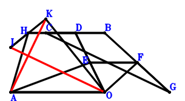
\(\because \) D is the midpoint of CB \(\therefore \small\overrightarrow{OD}=\dfrac{\small\overrightarrow{OB}}{2} + \dfrac{\small\overrightarrow{OC}}{2}\).\(\because \) E is the midpoint of DO \(\therefore \small\overrightarrow{OE}=\dfrac{\small\overrightarrow{OD}}{2}=\dfrac{\small\overrightarrow{OB}}{4} + \dfrac{\small\overrightarrow{OC}}{4}\).\(\because \) AO//EF and AO=2EF \(\therefore \small\overrightarrow{OF}=- \dfrac{\small\overrightarrow{OA}}{2} + \dfrac{\small\overrightarrow{OB}}{4} + \dfrac{\small\overrightarrow{OC}}{4}\).\(\because \) F is the midpoint of BG \(\therefore \small\overrightarrow{OG}=- \small\overrightarrow{OB} + 2 \small\overrightarrow{OF}=- \small\overrightarrow{OA} - \dfrac{\small\overrightarrow{OB}}{2} + \dfrac{\small\overrightarrow{OC}}{2}\).\(\because \) D is the midpoint of CB \(\therefore \small\overrightarrow{OH}=\dfrac{\small\overrightarrow{OA}}{2} + \dfrac{\small\overrightarrow{OB}}{2} + \dfrac{\small\overrightarrow{OC}}{2}\).\(\because \) AO//HD and AO=2HD \(\therefore \small\overrightarrow{OI}=2 \small\overrightarrow{OH} - \small\overrightarrow{OK}=\small\overrightarrow{OA} + \small\overrightarrow{OB} + \small\overrightarrow{OC} - \small\overrightarrow{OK}\).\(\because \) H is the midpoint of IK \(\therefore - \small\overrightarrow{OA}^{2} + \small\overrightarrow{OK}^{2}=0\) . . . . . . \(①\)\(\because \) KO=AO \(\therefore \small\overrightarrow{GC} \cdot \small\overrightarrow{KA}=\left(\small\overrightarrow{OA} - \small\overrightarrow{OK}\right) \cdot \left(\small\overrightarrow{OC} - \small\overrightarrow{OG}\right)=\left(\small\overrightarrow{OA} - \small\overrightarrow{OK}\right) \cdot \left(\small\overrightarrow{OA} + \dfrac{\small\overrightarrow{OB}}{2} + \dfrac{\small\overrightarrow{OC}}{2}\right)=\small\overrightarrow{OA}^{2} + \dfrac{\small\overrightarrow{OA} \cdot \small\overrightarrow{OB}}{2} + \dfrac{\small\overrightarrow{OA} \cdot \small\overrightarrow{OC}}{2} - \small\overrightarrow{OA} \cdot \small\overrightarrow{OK} - \dfrac{\small\overrightarrow{OB} \cdot \small\overrightarrow{OK}}{2} - \dfrac{\small\overrightarrow{OC} \cdot \small\overrightarrow{OK}}{2}=0\) . . . . . . \(②\)In conclusion, \(\small\overrightarrow{IO} \cdot \small\overrightarrow{KA}=- \small\overrightarrow{OI} \cdot \left(\small\overrightarrow{OA} - \small\overrightarrow{OK}\right)=- \left(\small\overrightarrow{OA} - \small\overrightarrow{OK}\right) \cdot \left(\small\overrightarrow{OA} + \small\overrightarrow{OB} + \small\overrightarrow{OC} - \small\overrightarrow{OK}\right)=- \small\overrightarrow{OA}^{2} - \small\overrightarrow{OA} \cdot \small\overrightarrow{OB} - \small\overrightarrow{OA} \cdot \small\overrightarrow{OC} + 2 \small\overrightarrow{OA} \cdot \small\overrightarrow{OK} + \small\overrightarrow{OB} \cdot \small\overrightarrow{OK} + \small\overrightarrow{OC} \cdot \small\overrightarrow{OK} - \small\overrightarrow{OK}^{2}=-①-2\cdot②=0\), that is, AK⊥IO.
Exercise 1537： Let CFAE and COHK be parallelograms. E, O, I, G are the midpoints of CB, DB, OH, AB, respectively. DF⊥AK. OK=OA. Prove that AK⊥GI.
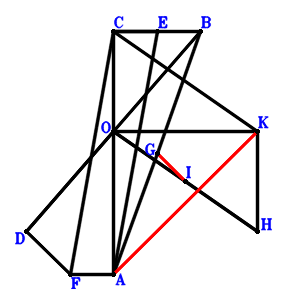
\(\because \) O is the midpoint of DB \(\therefore \small\overrightarrow{OD}=- \small\overrightarrow{OB}\).\(\because \) E is the midpoint of CB \(\therefore \small\overrightarrow{OE}=\dfrac{\small\overrightarrow{OB}}{2} + \dfrac{\small\overrightarrow{OC}}{2}\).\(\because \) CFAE is a parallelogram \(\therefore \small\overrightarrow{OF}=\small\overrightarrow{OA} + \small\overrightarrow{OC} - \small\overrightarrow{OE}=\small\overrightarrow{OA} - \dfrac{\small\overrightarrow{OB}}{2} + \dfrac{\small\overrightarrow{OC}}{2}\).\(\because \) G is the midpoint of AB \(\therefore \small\overrightarrow{OG}=\dfrac{\small\overrightarrow{OA}}{2} + \dfrac{\small\overrightarrow{OB}}{2}\).\(\because \) COHK is a parallelogram \(\therefore \small\overrightarrow{OH}=- \small\overrightarrow{OC} + \small\overrightarrow{OK}\).\(\because \) I is the midpoint of OH \(\therefore \small\overrightarrow{OI}=\dfrac{\small\overrightarrow{OH}}{2}=- \dfrac{\small\overrightarrow{OC}}{2} + \dfrac{\small\overrightarrow{OK}}{2}\).\(\because \) OK=OA \(\therefore - \small\overrightarrow{OA}^{2} + \small\overrightarrow{OK}^{2}=0\) . . . . . . \(①\)\(\because \) DF⊥AK \(\therefore \small\overrightarrow{DF} \cdot \small\overrightarrow{KA}=\left(\small\overrightarrow{OA} - \small\overrightarrow{OK}\right) \cdot \left(- \small\overrightarrow{OD} + \small\overrightarrow{OF}\right)=\left(\small\overrightarrow{OA} - \small\overrightarrow{OK}\right) \cdot \left(\small\overrightarrow{OA} + \dfrac{\small\overrightarrow{OB}}{2} + \dfrac{\small\overrightarrow{OC}}{2}\right)=\small\overrightarrow{OA}^{2} + \dfrac{\small\overrightarrow{OA} \cdot \small\overrightarrow{OB}}{2} + \dfrac{\small\overrightarrow{OA} \cdot \small\overrightarrow{OC}}{2} - \small\overrightarrow{OA} \cdot \small\overrightarrow{OK} - \dfrac{\small\overrightarrow{OB} \cdot \small\overrightarrow{OK}}{2} - \dfrac{\small\overrightarrow{OC} \cdot \small\overrightarrow{OK}}{2}=0\) . . . . . . \(②\)In conclusion, \(\small\overrightarrow{GI} \cdot \small\overrightarrow{KA}=\left(\small\overrightarrow{OA} - \small\overrightarrow{OK}\right) \cdot \left(- \small\overrightarrow{OG} + \small\overrightarrow{OI}\right)=\left(\small\overrightarrow{OA} - \small\overrightarrow{OK}\right) \cdot \left(- \dfrac{\small\overrightarrow{OA}}{2} - \dfrac{\small\overrightarrow{OB}}{2} - \dfrac{\small\overrightarrow{OC}}{2} + \dfrac{\small\overrightarrow{OK}}{2}\right)=- \dfrac{\small\overrightarrow{OA}^{2}}{2} - \dfrac{\small\overrightarrow{OA} \cdot \small\overrightarrow{OB}}{2} - \dfrac{\small\overrightarrow{OA} \cdot \small\overrightarrow{OC}}{2} + \small\overrightarrow{OA} \cdot \small\overrightarrow{OK} + \dfrac{\small\overrightarrow{OB} \cdot \small\overrightarrow{OK}}{2} + \dfrac{\small\overrightarrow{OC} \cdot \small\overrightarrow{OK}}{2} - \dfrac{\small\overrightarrow{OK}^{2}}{2}=-1/2\cdot①-②=0\), that is, AK⊥GI.
Exercise 2028： Let BGFH be a trapezoid with BH//GF and BH=2GF. F, G, D, O are the midpoints of CA, KO, BC, DE, respectively. KA⊥AE. KO=OA. Prove that KA⊥OH.
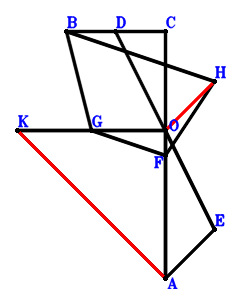
\(\because \) D is the midpoint of BC \(\therefore \small\overrightarrow{OD}=\dfrac{\small\overrightarrow{OB}}{2} + \dfrac{\small\overrightarrow{OC}}{2}\).\(\because \) O is the midpoint of DE \(\therefore \small\overrightarrow{OE}=- \small\overrightarrow{OD}=- \dfrac{\small\overrightarrow{OB}}{2} - \dfrac{\small\overrightarrow{OC}}{2}\).\(\because \) F is the midpoint of CA \(\therefore \small\overrightarrow{OF}=\dfrac{\small\overrightarrow{OA}}{2} + \dfrac{\small\overrightarrow{OC}}{2}\).\(\because \) G is the midpoint of KO \(\therefore \small\overrightarrow{OG}=\dfrac{\small\overrightarrow{OK}}{2}\).\(\because \) BH//GF and BH=2GF \(\therefore \small\overrightarrow{OH}=\small\overrightarrow{OA} + \small\overrightarrow{OB} + \small\overrightarrow{OC} - 2 \small\overrightarrow{OG}=\small\overrightarrow{OA} + \small\overrightarrow{OB} + \small\overrightarrow{OC} - \small\overrightarrow{OK}\).\(\because \) KO=OA \(\therefore - \small\overrightarrow{OA}^{2} + \small\overrightarrow{OK}^{2}=0\) . . . . . . \(①\)\(\because \) KA⊥AE \(\therefore \small\overrightarrow{EA} \cdot \small\overrightarrow{KA}=\left(\small\overrightarrow{OA} - \small\overrightarrow{OE}\right) \cdot \left(\small\overrightarrow{OA} - \small\overrightarrow{OK}\right)=\left(\small\overrightarrow{OA} - \small\overrightarrow{OK}\right) \cdot \left(\small\overrightarrow{OA} + \dfrac{\small\overrightarrow{OB}}{2} + \dfrac{\small\overrightarrow{OC}}{2}\right)=\small\overrightarrow{OA}^{2} + \dfrac{\small\overrightarrow{OA} \cdot \small\overrightarrow{OB}}{2} + \dfrac{\small\overrightarrow{OA} \cdot \small\overrightarrow{OC}}{2} - \small\overrightarrow{OA} \cdot \small\overrightarrow{OK} - \dfrac{\small\overrightarrow{OB} \cdot \small\overrightarrow{OK}}{2} - \dfrac{\small\overrightarrow{OC} \cdot \small\overrightarrow{OK}}{2}=0\) . . . . . . \(②\)In conclusion, \(\small\overrightarrow{HO} \cdot \small\overrightarrow{KA}=- \small\overrightarrow{OH} \cdot \left(\small\overrightarrow{OA} - \small\overrightarrow{OK}\right)=- \left(\small\overrightarrow{OA} - \small\overrightarrow{OK}\right) \cdot \left(\small\overrightarrow{OA} + \small\overrightarrow{OB} + \small\overrightarrow{OC} - \small\overrightarrow{OK}\right)=- \small\overrightarrow{OA}^{2} - \small\overrightarrow{OA} \cdot \small\overrightarrow{OB} - \small\overrightarrow{OA} \cdot \small\overrightarrow{OC} + 2 \small\overrightarrow{OA} \cdot \small\overrightarrow{OK} + \small\overrightarrow{OB} \cdot \small\overrightarrow{OK} + \small\overrightarrow{OC} \cdot \small\overrightarrow{OK} - \small\overrightarrow{OK}^{2}=-①-2\cdot②=0\), that is, KA⊥OH.
Exercise 2542： Let CKFO be a parallelogram. CBOD is a trapezoid with BC//OD and BC=4OD. D is the midpoint of CE. G is the midpoint of AH and FO. KA⊥AE. KO=AO. Prove that BH⊥KA.
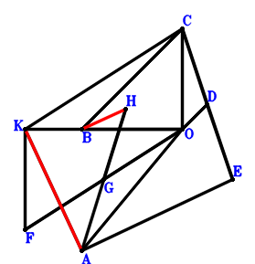
\(\because \) BC//OD and BC=4OD \(\therefore \small\overrightarrow{OD}=- \dfrac{\small\overrightarrow{OB}}{4} + \dfrac{\small\overrightarrow{OC}}{4}\).\(\because \) D is the midpoint of CE \(\therefore \small\overrightarrow{OE}=- \small\overrightarrow{OC} + 2 \small\overrightarrow{OD}=- \dfrac{\small\overrightarrow{OB}}{2} - \dfrac{\small\overrightarrow{OC}}{2}\).\(\because \) CKFO is a parallelogram \(\therefore \small\overrightarrow{OF}=- \small\overrightarrow{OC} + \small\overrightarrow{OK}\).\(\because \) G is the midpoint of FO \(\therefore \small\overrightarrow{OG}=\dfrac{\small\overrightarrow{OF}}{2}=- \dfrac{\small\overrightarrow{OC}}{2} + \dfrac{\small\overrightarrow{OK}}{2}\).\(\because \) G is the midpoint of AH \(\therefore \small\overrightarrow{OH}=- \small\overrightarrow{OA} + 2 \small\overrightarrow{OG}=- \small\overrightarrow{OA} - \small\overrightarrow{OC} + \small\overrightarrow{OK}\).\(\because \) KO=AO \(\therefore - \small\overrightarrow{OA}^{2} + \small\overrightarrow{OK}^{2}=0\) . . . . . . \(①\)\(\because \) KA⊥AE \(\therefore \small\overrightarrow{EA} \cdot \small\overrightarrow{KA}=\left(\small\overrightarrow{OA} - \small\overrightarrow{OE}\right) \cdot \left(\small\overrightarrow{OA} - \small\overrightarrow{OK}\right)=\left(\small\overrightarrow{OA} - \small\overrightarrow{OK}\right) \cdot \left(\small\overrightarrow{OA} + \dfrac{\small\overrightarrow{OB}}{2} + \dfrac{\small\overrightarrow{OC}}{2}\right)=\small\overrightarrow{OA}^{2} + \dfrac{\small\overrightarrow{OA} \cdot \small\overrightarrow{OB}}{2} + \dfrac{\small\overrightarrow{OA} \cdot \small\overrightarrow{OC}}{2} - \small\overrightarrow{OA} \cdot \small\overrightarrow{OK} - \dfrac{\small\overrightarrow{OB} \cdot \small\overrightarrow{OK}}{2} - \dfrac{\small\overrightarrow{OC} \cdot \small\overrightarrow{OK}}{2}=0\) . . . . . . \(②\)In conclusion, \(\small\overrightarrow{BH} \cdot \small\overrightarrow{KA}=\left(\small\overrightarrow{OA} - \small\overrightarrow{OK}\right) \cdot \left(- \small\overrightarrow{OB} + \small\overrightarrow{OH}\right)=\left(\small\overrightarrow{OA} - \small\overrightarrow{OK}\right) \cdot \left(- \small\overrightarrow{OA} - \small\overrightarrow{OB} - \small\overrightarrow{OC} + \small\overrightarrow{OK}\right)=- \small\overrightarrow{OA}^{2} - \small\overrightarrow{OA} \cdot \small\overrightarrow{OB} - \small\overrightarrow{OA} \cdot \small\overrightarrow{OC} + 2 \small\overrightarrow{OA} \cdot \small\overrightarrow{OK} + \small\overrightarrow{OB} \cdot \small\overrightarrow{OK} + \small\overrightarrow{OC} \cdot \small\overrightarrow{OK} - \small\overrightarrow{OK}^{2}=-①-2\cdot②=0\), that is, BH⊥KA.
Exercise 3575： Let DBEA be a parallelogram. G is the centroid of △BCA. E, G, O are collinear and 2EO=3EG. O, F are the midpoints of DC, BC, respectively. EK⊥KA. KO=OA. Prove that FE⊥KA.
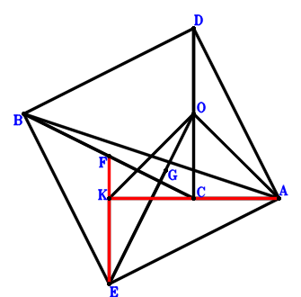
\(\because \) O is the midpoint of DC \(\therefore \small\overrightarrow{AD}=- \small\overrightarrow{AC} + 2 \small\overrightarrow{AO}\).\(\because \) DBEA is a parallelogram \(\therefore \small\overrightarrow{AE}=\small\overrightarrow{AB} - \small\overrightarrow{AD}=\small\overrightarrow{AB} + \small\overrightarrow{AC} - 2 \small\overrightarrow{AO}\).\(\because \) F is the midpoint of BC \(\therefore \small\overrightarrow{AF}=\dfrac{\small\overrightarrow{AB}}{2} + \dfrac{\small\overrightarrow{AC}}{2}\).\(\because \) G is the centroid of △BCA \(\therefore \small\overrightarrow{AG}=\dfrac{\small\overrightarrow{AB}}{3} + \dfrac{\small\overrightarrow{AC}}{3}\).\(\because \) E, G, O are collinear and 2EO=3EG \(\therefore - \small\overrightarrow{OA}^{2} + \small\overrightarrow{OK}^{2}=- \small\overrightarrow{AO}^{2} + \left(\small\overrightarrow{AK} - \small\overrightarrow{AO}\right)^{2}=\small\overrightarrow{AK}^{2} - 2 \small\overrightarrow{AK} \cdot \small\overrightarrow{AO}=0\) . . . . . . \(①\)\(\because \) KO=OA \(\therefore \small\overrightarrow{EK} \cdot \small\overrightarrow{KA}=- \small\overrightarrow{AK} \cdot \left(- \small\overrightarrow{AE} + \small\overrightarrow{AK}\right)=- \small\overrightarrow{AK} \cdot \left(- \small\overrightarrow{AB} - \small\overrightarrow{AC} + \small\overrightarrow{AK} + 2 \small\overrightarrow{AO}\right)=\small\overrightarrow{AB} \cdot \small\overrightarrow{AK} + \small\overrightarrow{AC} \cdot \small\overrightarrow{AK} - \small\overrightarrow{AK}^{2} - 2 \small\overrightarrow{AK} \cdot \small\overrightarrow{AO}=0\) . . . . . . \(②\)In conclusion, \(\small\overrightarrow{FE} \cdot \small\overrightarrow{KA}=- \small\overrightarrow{AK} \cdot \left(\small\overrightarrow{AE} - \small\overrightarrow{AF}\right)=- \small\overrightarrow{AK} \cdot \left(\dfrac{\small\overrightarrow{AB}}{2} + \dfrac{\small\overrightarrow{AC}}{2} - 2 \small\overrightarrow{AO}\right)=- \dfrac{\small\overrightarrow{AB} \cdot \small\overrightarrow{AK}}{2} - \dfrac{\small\overrightarrow{AC} \cdot \small\overrightarrow{AK}}{2} + 2 \small\overrightarrow{AK} \cdot \small\overrightarrow{AO}=-1/2\cdot①-1/2\cdot②=0\), that is, FE⊥KA.
Exercise 4427： Let BOED be a parallelogram. H is the centroid of △BAC. I, H, O are collinear and 2IO=3IH. D is the midpoint of BC. F is the midpoint of CG and OE. KA⊥AG. KO=OA. Prove that IK⊥KA.
\(\because \) D is the midpoint of BC \(\therefore \small\overrightarrow{OD}=\dfrac{\small\overrightarrow{OB}}{2} + \dfrac{\small\overrightarrow{OC}}{2}\).\(\because \) BOED is a parallelogram \(\therefore \small\overrightarrow{OE}=- \dfrac{\small\overrightarrow{OB}}{2} + \dfrac{\small\overrightarrow{OC}}{2}\).\(\because \) F is the midpoint of OE \(\therefore \small\overrightarrow{OF}=\dfrac{\small\overrightarrow{OE}}{2}=- \dfrac{\small\overrightarrow{OB}}{4} + \dfrac{\small\overrightarrow{OC}}{4}\).\(\because \) F is the midpoint of CG \(\therefore \small\overrightarrow{OG}=- \small\overrightarrow{OC} + 2 \small\overrightarrow{OF}=- \dfrac{\small\overrightarrow{OB}}{2} - \dfrac{\small\overrightarrow{OC}}{2}\).\(\because \) H is the centroid of △BAC \(\therefore \small\overrightarrow{OH}=\dfrac{\small\overrightarrow{OA}}{3} + \dfrac{\small\overrightarrow{OB}}{3} + \dfrac{\small\overrightarrow{OC}}{3}\).\(\because \) I, H, O are collinear and 2IO=3IH \(\therefore \small\overrightarrow{OI}=3 \small\overrightarrow{OH}=\small\overrightarrow{OA} + \small\overrightarrow{OB} + \small\overrightarrow{OC}\).\(\because \) KO=OA \(\therefore - \small\overrightarrow{OA}^{2} + \small\overrightarrow{OK}^{2}=0\) . . . . . . \(①\)\(\because \) KA⊥AG \(\therefore \small\overrightarrow{GA} \cdot \small\overrightarrow{KA}=\left(\small\overrightarrow{OA} - \small\overrightarrow{OG}\right) \cdot \left(\small\overrightarrow{OA} - \small\overrightarrow{OK}\right)=\left(\small\overrightarrow{OA} - \small\overrightarrow{OK}\right) \cdot \left(\small\overrightarrow{OA} + \dfrac{\small\overrightarrow{OB}}{2} + \dfrac{\small\overrightarrow{OC}}{2}\right)=\small\overrightarrow{OA}^{2} + \dfrac{\small\overrightarrow{OA} \cdot \small\overrightarrow{OB}}{2} + \dfrac{\small\overrightarrow{OA} \cdot \small\overrightarrow{OC}}{2} - \small\overrightarrow{OA} \cdot \small\overrightarrow{OK} - \dfrac{\small\overrightarrow{OB} \cdot \small\overrightarrow{OK}}{2} - \dfrac{\small\overrightarrow{OC} \cdot \small\overrightarrow{OK}}{2}=0\) . . . . . . \(②\)In conclusion, \(\small\overrightarrow{IK} \cdot \small\overrightarrow{KA}=\left(\small\overrightarrow{OA} - \small\overrightarrow{OK}\right) \cdot \left(- \small\overrightarrow{OI} + \small\overrightarrow{OK}\right)=\left(\small\overrightarrow{OA} - \small\overrightarrow{OK}\right) \cdot \left(- \small\overrightarrow{OA} - \small\overrightarrow{OB} - \small\overrightarrow{OC} + \small\overrightarrow{OK}\right)=- \small\overrightarrow{OA}^{2} - \small\overrightarrow{OA} \cdot \small\overrightarrow{OB} - \small\overrightarrow{OA} \cdot \small\overrightarrow{OC} + 2 \small\overrightarrow{OA} \cdot \small\overrightarrow{OK} + \small\overrightarrow{OB} \cdot \small\overrightarrow{OK} + \small\overrightarrow{OC} \cdot \small\overrightarrow{OK} - \small\overrightarrow{OK}^{2}=-①-2\cdot②=0\), that is, IK⊥KA.
Exercise 4432： Let GBOC be a parallelogram. CBOD is a trapezoid with BC//OD and BC=2OD. E is the midpoint of OD and CF. H is the midpoint of AI and KO. KA⊥AF. KO=AO. Prove that GI⊥KA.
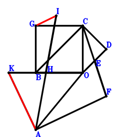
\(\because \) BC//OD and BC=2OD \(\therefore \small\overrightarrow{OD}=- \dfrac{\small\overrightarrow{OB}}{2} + \dfrac{\small\overrightarrow{OC}}{2}\).\(\because \) E is the midpoint of OD \(\therefore \small\overrightarrow{OE}=\dfrac{\small\overrightarrow{OD}}{2}=- \dfrac{\small\overrightarrow{OB}}{4} + \dfrac{\small\overrightarrow{OC}}{4}\).\(\because \) E is the midpoint of CF \(\therefore \small\overrightarrow{OF}=- \small\overrightarrow{OC} + 2 \small\overrightarrow{OE}=- \dfrac{\small\overrightarrow{OB}}{2} - \dfrac{\small\overrightarrow{OC}}{2}\).\(\because \) GBOC is a parallelogram \(\therefore \small\overrightarrow{OG}=\small\overrightarrow{OB} + \small\overrightarrow{OC}\).\(\because \) H is the midpoint of KO \(\therefore \small\overrightarrow{OH}=\dfrac{\small\overrightarrow{OK}}{2}\).\(\because \) H is the midpoint of AI \(\therefore \small\overrightarrow{OI}=- \small\overrightarrow{OA} + 2 \small\overrightarrow{OH}=- \small\overrightarrow{OA} + \small\overrightarrow{OK}\).\(\because \) KO=AO \(\therefore - \small\overrightarrow{OA}^{2} + \small\overrightarrow{OK}^{2}=0\) . . . . . . \(①\)\(\because \) KA⊥AF \(\therefore \small\overrightarrow{FA} \cdot \small\overrightarrow{KA}=\left(\small\overrightarrow{OA} - \small\overrightarrow{OF}\right) \cdot \left(\small\overrightarrow{OA} - \small\overrightarrow{OK}\right)=\left(\small\overrightarrow{OA} - \small\overrightarrow{OK}\right) \cdot \left(\small\overrightarrow{OA} + \dfrac{\small\overrightarrow{OB}}{2} + \dfrac{\small\overrightarrow{OC}}{2}\right)=\small\overrightarrow{OA}^{2} + \dfrac{\small\overrightarrow{OA} \cdot \small\overrightarrow{OB}}{2} + \dfrac{\small\overrightarrow{OA} \cdot \small\overrightarrow{OC}}{2} - \small\overrightarrow{OA} \cdot \small\overrightarrow{OK} - \dfrac{\small\overrightarrow{OB} \cdot \small\overrightarrow{OK}}{2} - \dfrac{\small\overrightarrow{OC} \cdot \small\overrightarrow{OK}}{2}=0\) . . . . . . \(②\)In conclusion, \(\small\overrightarrow{GI} \cdot \small\overrightarrow{KA}=\left(\small\overrightarrow{OA} - \small\overrightarrow{OK}\right) \cdot \left(- \small\overrightarrow{OG} + \small\overrightarrow{OI}\right)=\left(\small\overrightarrow{OA} - \small\overrightarrow{OK}\right) \cdot \left(- \small\overrightarrow{OA} - \small\overrightarrow{OB} - \small\overrightarrow{OC} + \small\overrightarrow{OK}\right)=- \small\overrightarrow{OA}^{2} - \small\overrightarrow{OA} \cdot \small\overrightarrow{OB} - \small\overrightarrow{OA} \cdot \small\overrightarrow{OC} + 2 \small\overrightarrow{OA} \cdot \small\overrightarrow{OK} + \small\overrightarrow{OB} \cdot \small\overrightarrow{OK} + \small\overrightarrow{OC} \cdot \small\overrightarrow{OK} - \small\overrightarrow{OK}^{2}=-①-2\cdot②=0\), that is, GI⊥KA.
Exercise 5091： Let BFGO be a parallelogram. H is the centroid of △CBA. I, H, O are collinear and 2IO=3IH. D is the midpoint of BC. E is the midpoint of FC and DO. KA⊥AG. KO=AO. Prove that IK⊥KA.
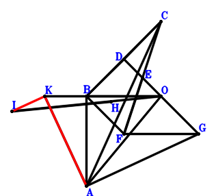
\(\because \) D is the midpoint of BC \(\therefore \small\overrightarrow{OD}=\dfrac{\small\overrightarrow{OB}}{2} + \dfrac{\small\overrightarrow{OC}}{2}\).\(\because \) E is the midpoint of DO \(\therefore \small\overrightarrow{OE}=\dfrac{\small\overrightarrow{OD}}{2}=\dfrac{\small\overrightarrow{OB}}{4} + \dfrac{\small\overrightarrow{OC}}{4}\).\(\because \) E is the midpoint of FC \(\therefore \small\overrightarrow{OF}=- \small\overrightarrow{OC} + 2 \small\overrightarrow{OE}=\dfrac{\small\overrightarrow{OB}}{2} - \dfrac{\small\overrightarrow{OC}}{2}\).\(\because \) BFGO is a parallelogram \(\therefore \small\overrightarrow{OG}=- \dfrac{\small\overrightarrow{OB}}{2} - \dfrac{\small\overrightarrow{OC}}{2}\).\(\because \) H is the centroid of △CBA \(\therefore \small\overrightarrow{OH}=\dfrac{\small\overrightarrow{OA}}{3} + \dfrac{\small\overrightarrow{OB}}{3} + \dfrac{\small\overrightarrow{OC}}{3}\).\(\because \) I, H, O are collinear and 2IO=3IH \(\therefore \small\overrightarrow{OI}=3 \small\overrightarrow{OH}=\small\overrightarrow{OA} + \small\overrightarrow{OB} + \small\overrightarrow{OC}\).\(\because \) KO=AO \(\therefore - \small\overrightarrow{OA}^{2} + \small\overrightarrow{OK}^{2}=0\) . . . . . . \(①\)\(\because \) KA⊥AG \(\therefore \small\overrightarrow{GA} \cdot \small\overrightarrow{KA}=\left(\small\overrightarrow{OA} - \small\overrightarrow{OG}\right) \cdot \left(\small\overrightarrow{OA} - \small\overrightarrow{OK}\right)=\left(\small\overrightarrow{OA} - \small\overrightarrow{OK}\right) \cdot \left(\small\overrightarrow{OA} + \dfrac{\small\overrightarrow{OB}}{2} + \dfrac{\small\overrightarrow{OC}}{2}\right)=\small\overrightarrow{OA}^{2} + \dfrac{\small\overrightarrow{OA} \cdot \small\overrightarrow{OB}}{2} + \dfrac{\small\overrightarrow{OA} \cdot \small\overrightarrow{OC}}{2} - \small\overrightarrow{OA} \cdot \small\overrightarrow{OK} - \dfrac{\small\overrightarrow{OB} \cdot \small\overrightarrow{OK}}{2} - \dfrac{\small\overrightarrow{OC} \cdot \small\overrightarrow{OK}}{2}=0\) . . . . . . \(②\)In conclusion, \(\small\overrightarrow{IK} \cdot \small\overrightarrow{KA}=\left(\small\overrightarrow{OA} - \small\overrightarrow{OK}\right) \cdot \left(- \small\overrightarrow{OI} + \small\overrightarrow{OK}\right)=\left(\small\overrightarrow{OA} - \small\overrightarrow{OK}\right) \cdot \left(- \small\overrightarrow{OA} - \small\overrightarrow{OB} - \small\overrightarrow{OC} + \small\overrightarrow{OK}\right)=- \small\overrightarrow{OA}^{2} - \small\overrightarrow{OA} \cdot \small\overrightarrow{OB} - \small\overrightarrow{OA} \cdot \small\overrightarrow{OC} + 2 \small\overrightarrow{OA} \cdot \small\overrightarrow{OK} + \small\overrightarrow{OB} \cdot \small\overrightarrow{OK} + \small\overrightarrow{OC} \cdot \small\overrightarrow{OK} - \small\overrightarrow{OK}^{2}=-①-2\cdot②=0\), that is, IK⊥KA.
Exercise 5401： Let KBDE be a parallelogram. CBOF is a trapezoid with CF//BO and CF=2BO. O, G are the midpoints of CD, BF, respectively. H is the midpoint of OI and CA. KA⊥AE. KO=OA. Prove that GI⊥KA.
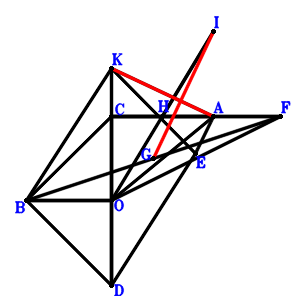
\(\because \) O is the midpoint of CD \(\therefore \small\overrightarrow{OD}=- \small\overrightarrow{OC}\).\(\because \) KBDE is a parallelogram \(\therefore \small\overrightarrow{OE}=- \small\overrightarrow{OB} - \small\overrightarrow{OC} + \small\overrightarrow{OK}\).\(\because \) CF//BO and CF=2BO \(\therefore \small\overrightarrow{OF}=- 2 \small\overrightarrow{OB} + \small\overrightarrow{OC}\).\(\because \) G is the midpoint of BF \(\therefore \small\overrightarrow{OG}=\dfrac{\small\overrightarrow{OB}}{2} + \dfrac{\small\overrightarrow{OF}}{2}=- \dfrac{\small\overrightarrow{OB}}{2} + \dfrac{\small\overrightarrow{OC}}{2}\).\(\because \) H is the midpoint of CA \(\therefore \small\overrightarrow{OH}=\dfrac{\small\overrightarrow{OA}}{2} + \dfrac{\small\overrightarrow{OC}}{2}\).\(\because \) H is the midpoint of OI \(\therefore \small\overrightarrow{OI}=2 \small\overrightarrow{OH}=\small\overrightarrow{OA} + \small\overrightarrow{OC}\).\(\because \) KO=OA \(\therefore - \small\overrightarrow{OA}^{2} + \small\overrightarrow{OK}^{2}=0\) . . . . . . \(①\)\(\because \) KA⊥AE \(\therefore \small\overrightarrow{AE} \cdot \small\overrightarrow{KA}=\left(- \small\overrightarrow{OA} + \small\overrightarrow{OE}\right) \cdot \left(\small\overrightarrow{OA} - \small\overrightarrow{OK}\right)=\left(\small\overrightarrow{OA} - \small\overrightarrow{OK}\right) \cdot \left(- \small\overrightarrow{OA} - \small\overrightarrow{OB} - \small\overrightarrow{OC} + \small\overrightarrow{OK}\right)=- \small\overrightarrow{OA}^{2} - \small\overrightarrow{OA} \cdot \small\overrightarrow{OB} - \small\overrightarrow{OA} \cdot \small\overrightarrow{OC} + 2 \small\overrightarrow{OA} \cdot \small\overrightarrow{OK} + \small\overrightarrow{OB} \cdot \small\overrightarrow{OK} + \small\overrightarrow{OC} \cdot \small\overrightarrow{OK} - \small\overrightarrow{OK}^{2}=0\) . . . . . . \(②\)In conclusion, \(\small\overrightarrow{GI} \cdot \small\overrightarrow{KA}=\left(\small\overrightarrow{OA} - \small\overrightarrow{OK}\right) \cdot \left(- \small\overrightarrow{OG} + \small\overrightarrow{OI}\right)=\left(\small\overrightarrow{OA} - \small\overrightarrow{OK}\right) \cdot \left(\small\overrightarrow{OA} + \dfrac{\small\overrightarrow{OB}}{2} + \dfrac{\small\overrightarrow{OC}}{2}\right)=\small\overrightarrow{OA}^{2} + \dfrac{\small\overrightarrow{OA} \cdot \small\overrightarrow{OB}}{2} + \dfrac{\small\overrightarrow{OA} \cdot \small\overrightarrow{OC}}{2} - \small\overrightarrow{OA} \cdot \small\overrightarrow{OK} - \dfrac{\small\overrightarrow{OB} \cdot \small\overrightarrow{OK}}{2} - \dfrac{\small\overrightarrow{OC} \cdot \small\overrightarrow{OK}}{2}=-1/2\cdot①-1/2\cdot②=0\), that is, GI⊥KA.
Exercise 5736： Let BIHO be a parallelogram. BCDE is a trapezoid with BE//CD and BE=2CD. F, O are the midpoints of CE, BD, respectively. G is the midpoint of CA and HO. KA⊥AF. KO=AO. Prove that IK⊥KA.
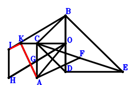
\(\because \) O is the midpoint of BD \(\therefore \small\overrightarrow{OD}=- \small\overrightarrow{OB}\).\(\because \) BE//CD and BE=2CD \(\therefore \small\overrightarrow{OE}=\small\overrightarrow{OB} - 2 \small\overrightarrow{OC} + 2 \small\overrightarrow{OD}=- \small\overrightarrow{OB} - 2 \small\overrightarrow{OC}\).\(\because \) F is the midpoint of CE \(\therefore \small\overrightarrow{OF}=\dfrac{\small\overrightarrow{OC}}{2} + \dfrac{\small\overrightarrow{OE}}{2}=- \dfrac{\small\overrightarrow{OB}}{2} - \dfrac{\small\overrightarrow{OC}}{2}\).\(\because \) G is the midpoint of CA \(\therefore \small\overrightarrow{OG}=\dfrac{\small\overrightarrow{OA}}{2} + \dfrac{\small\overrightarrow{OC}}{2}\).\(\because \) G is the midpoint of HO \(\therefore \small\overrightarrow{OH}=2 \small\overrightarrow{OG}=\small\overrightarrow{OA} + \small\overrightarrow{OC}\).\(\because \) BIHO is a parallelogram \(\therefore \small\overrightarrow{OI}=\small\overrightarrow{OA} + \small\overrightarrow{OB} + \small\overrightarrow{OC}\).\(\because \) KO=AO \(\therefore - \small\overrightarrow{OA}^{2} + \small\overrightarrow{OK}^{2}=0\) . . . . . . \(①\)\(\because \) KA⊥AF \(\therefore \small\overrightarrow{FA} \cdot \small\overrightarrow{KA}=\left(\small\overrightarrow{OA} - \small\overrightarrow{OF}\right) \cdot \left(\small\overrightarrow{OA} - \small\overrightarrow{OK}\right)=\left(\small\overrightarrow{OA} - \small\overrightarrow{OK}\right) \cdot \left(\small\overrightarrow{OA} + \dfrac{\small\overrightarrow{OB}}{2} + \dfrac{\small\overrightarrow{OC}}{2}\right)=\small\overrightarrow{OA}^{2} + \dfrac{\small\overrightarrow{OA} \cdot \small\overrightarrow{OB}}{2} + \dfrac{\small\overrightarrow{OA} \cdot \small\overrightarrow{OC}}{2} - \small\overrightarrow{OA} \cdot \small\overrightarrow{OK} - \dfrac{\small\overrightarrow{OB} \cdot \small\overrightarrow{OK}}{2} - \dfrac{\small\overrightarrow{OC} \cdot \small\overrightarrow{OK}}{2}=0\) . . . . . . \(②\)In conclusion, \(\small\overrightarrow{IK} \cdot \small\overrightarrow{KA}=\left(\small\overrightarrow{OA} - \small\overrightarrow{OK}\right) \cdot \left(- \small\overrightarrow{OI} + \small\overrightarrow{OK}\right)=\left(\small\overrightarrow{OA} - \small\overrightarrow{OK}\right) \cdot \left(- \small\overrightarrow{OA} - \small\overrightarrow{OB} - \small\overrightarrow{OC} + \small\overrightarrow{OK}\right)=- \small\overrightarrow{OA}^{2} - \small\overrightarrow{OA} \cdot \small\overrightarrow{OB} - \small\overrightarrow{OA} \cdot \small\overrightarrow{OC} + 2 \small\overrightarrow{OA} \cdot \small\overrightarrow{OK} + \small\overrightarrow{OB} \cdot \small\overrightarrow{OK} + \small\overrightarrow{OC} \cdot \small\overrightarrow{OK} - \small\overrightarrow{OK}^{2}=-①-2\cdot②=0\), that is, IK⊥KA.
Exercise 5956： Let BKGO be a parallelogram. CADB is a trapezoid with CB//AD and CB=2AD. F, H, O are the midpoints of CA, GO, ED, respectively. KA⊥CE. KO=OA. Prove that KA⊥HF.
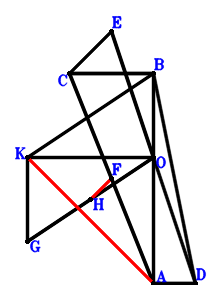
\(\because \) CB//AD and CB=2AD \(\therefore \small\overrightarrow{OD}=\small\overrightarrow{OA} + \dfrac{\small\overrightarrow{OB}}{2} - \dfrac{\small\overrightarrow{OC}}{2}\).\(\because \) O is the midpoint of ED \(\therefore \small\overrightarrow{OE}=- \small\overrightarrow{OD}=- \small\overrightarrow{OA} - \dfrac{\small\overrightarrow{OB}}{2} + \dfrac{\small\overrightarrow{OC}}{2}\).\(\because \) F is the midpoint of CA \(\therefore \small\overrightarrow{OF}=\dfrac{\small\overrightarrow{OA}}{2} + \dfrac{\small\overrightarrow{OC}}{2}\).\(\because \) BKGO is a parallelogram \(\therefore \small\overrightarrow{OG}=- \small\overrightarrow{OB} + \small\overrightarrow{OK}\).\(\because \) H is the midpoint of GO \(\therefore \small\overrightarrow{OH}=\dfrac{\small\overrightarrow{OG}}{2}=- \dfrac{\small\overrightarrow{OB}}{2} + \dfrac{\small\overrightarrow{OK}}{2}\).\(\because \) KO=OA \(\therefore - \small\overrightarrow{OA}^{2} + \small\overrightarrow{OK}^{2}=0\) . . . . . . \(①\)\(\because \) KA⊥CE \(\therefore \small\overrightarrow{EC} \cdot \small\overrightarrow{KA}=\left(\small\overrightarrow{OA} - \small\overrightarrow{OK}\right) \cdot \left(\small\overrightarrow{OC} - \small\overrightarrow{OE}\right)=\left(\small\overrightarrow{OA} - \small\overrightarrow{OK}\right) \cdot \left(\small\overrightarrow{OA} + \dfrac{\small\overrightarrow{OB}}{2} + \dfrac{\small\overrightarrow{OC}}{2}\right)=\small\overrightarrow{OA}^{2} + \dfrac{\small\overrightarrow{OA} \cdot \small\overrightarrow{OB}}{2} + \dfrac{\small\overrightarrow{OA} \cdot \small\overrightarrow{OC}}{2} - \small\overrightarrow{OA} \cdot \small\overrightarrow{OK} - \dfrac{\small\overrightarrow{OB} \cdot \small\overrightarrow{OK}}{2} - \dfrac{\small\overrightarrow{OC} \cdot \small\overrightarrow{OK}}{2}=0\) . . . . . . \(②\)In conclusion, \(\small\overrightarrow{FH} \cdot \small\overrightarrow{KA}=\left(\small\overrightarrow{OA} - \small\overrightarrow{OK}\right) \cdot \left(- \small\overrightarrow{OF} + \small\overrightarrow{OH}\right)=\left(\small\overrightarrow{OA} - \small\overrightarrow{OK}\right) \cdot \left(- \dfrac{\small\overrightarrow{OA}}{2} - \dfrac{\small\overrightarrow{OB}}{2} - \dfrac{\small\overrightarrow{OC}}{2} + \dfrac{\small\overrightarrow{OK}}{2}\right)=- \dfrac{\small\overrightarrow{OA}^{2}}{2} - \dfrac{\small\overrightarrow{OA} \cdot \small\overrightarrow{OB}}{2} - \dfrac{\small\overrightarrow{OA} \cdot \small\overrightarrow{OC}}{2} + \small\overrightarrow{OA} \cdot \small\overrightarrow{OK} + \dfrac{\small\overrightarrow{OB} \cdot \small\overrightarrow{OK}}{2} + \dfrac{\small\overrightarrow{OC} \cdot \small\overrightarrow{OK}}{2} - \dfrac{\small\overrightarrow{OK}^{2}}{2}=-1/2\cdot①-②=0\), that is, KA⊥HF.
Exercise 6370： Let JBOI be a parallelogram. EBOF is a trapezoid with BO//EF and BO=2EF. F, D, E are the midpoints of CG, BC, DO, respectively. H is the midpoint of OI and CA. KA⊥AG. KO=OA. Prove that JK⊥KA.
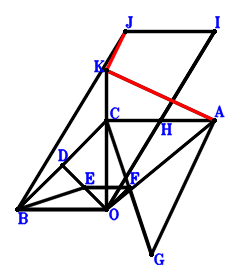
\(\because \) D is the midpoint of BC \(\therefore \small\overrightarrow{OD}=\dfrac{\small\overrightarrow{OB}}{2} + \dfrac{\small\overrightarrow{OC}}{2}\).\(\because \) E is the midpoint of DO \(\therefore \small\overrightarrow{OE}=\dfrac{\small\overrightarrow{OD}}{2}=\dfrac{\small\overrightarrow{OB}}{4} + \dfrac{\small\overrightarrow{OC}}{4}\).\(\because \) BO//EF and BO=2EF \(\therefore \small\overrightarrow{OF}=- \dfrac{\small\overrightarrow{OB}}{4} + \dfrac{\small\overrightarrow{OC}}{4}\).\(\because \) F is the midpoint of CG \(\therefore \small\overrightarrow{OG}=- \small\overrightarrow{OC} + 2 \small\overrightarrow{OF}=- \dfrac{\small\overrightarrow{OB}}{2} - \dfrac{\small\overrightarrow{OC}}{2}\).\(\because \) H is the midpoint of CA \(\therefore \small\overrightarrow{OH}=\dfrac{\small\overrightarrow{OA}}{2} + \dfrac{\small\overrightarrow{OC}}{2}\).\(\because \) H is the midpoint of OI \(\therefore \small\overrightarrow{OI}=2 \small\overrightarrow{OH}=\small\overrightarrow{OA} + \small\overrightarrow{OC}\).\(\because \) JBOI is a parallelogram \(\therefore \small\overrightarrow{OJ}=\small\overrightarrow{OA} + \small\overrightarrow{OB} + \small\overrightarrow{OC}\).\(\because \) KO=OA \(\therefore - \small\overrightarrow{OA}^{2} + \small\overrightarrow{OK}^{2}=0\) . . . . . . \(①\)\(\because \) KA⊥AG \(\therefore \small\overrightarrow{GA} \cdot \small\overrightarrow{KA}=\left(\small\overrightarrow{OA} - \small\overrightarrow{OG}\right) \cdot \left(\small\overrightarrow{OA} - \small\overrightarrow{OK}\right)=\left(\small\overrightarrow{OA} - \small\overrightarrow{OK}\right) \cdot \left(\small\overrightarrow{OA} + \dfrac{\small\overrightarrow{OB}}{2} + \dfrac{\small\overrightarrow{OC}}{2}\right)=\small\overrightarrow{OA}^{2} + \dfrac{\small\overrightarrow{OA} \cdot \small\overrightarrow{OB}}{2} + \dfrac{\small\overrightarrow{OA} \cdot \small\overrightarrow{OC}}{2} - \small\overrightarrow{OA} \cdot \small\overrightarrow{OK} - \dfrac{\small\overrightarrow{OB} \cdot \small\overrightarrow{OK}}{2} - \dfrac{\small\overrightarrow{OC} \cdot \small\overrightarrow{OK}}{2}=0\) . . . . . . \(②\)In conclusion, \(\small\overrightarrow{JK} \cdot \small\overrightarrow{KA}=\left(\small\overrightarrow{OA} - \small\overrightarrow{OK}\right) \cdot \left(- \small\overrightarrow{OJ} + \small\overrightarrow{OK}\right)=\left(\small\overrightarrow{OA} - \small\overrightarrow{OK}\right) \cdot \left(- \small\overrightarrow{OA} - \small\overrightarrow{OB} - \small\overrightarrow{OC} + \small\overrightarrow{OK}\right)=- \small\overrightarrow{OA}^{2} - \small\overrightarrow{OA} \cdot \small\overrightarrow{OB} - \small\overrightarrow{OA} \cdot \small\overrightarrow{OC} + 2 \small\overrightarrow{OA} \cdot \small\overrightarrow{OK} + \small\overrightarrow{OB} \cdot \small\overrightarrow{OK} + \small\overrightarrow{OC} \cdot \small\overrightarrow{OK} - \small\overrightarrow{OK}^{2}=-①-2\cdot②=0\), that is, JK⊥KA.
Exercise 6557： Let OFGB be a trapezoid with OB//FG and OB=2FG. O, D are the orthocenter and circumcenter of △ACB. E, F, G are the midpoints of CB, AC, HE, respectively. AK⊥KD. KO=AO. Prove that HO⊥AK.
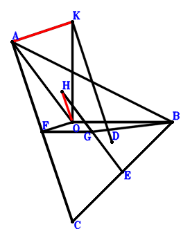
\(\because \) O, D are the orthocenter and circumcenter of △ACB \(\therefore \small\overrightarrow{OD}=\small\overrightarrow{OA} + \small\overrightarrow{OB} + \small\overrightarrow{OC}\).\(\because \) E is the midpoint of CB \(\therefore \small\overrightarrow{OE}=\dfrac{\small\overrightarrow{OB}}{2} + \dfrac{\small\overrightarrow{OC}}{2}\).\(\because \) F is the midpoint of AC \(\therefore \small\overrightarrow{OF}=\dfrac{\small\overrightarrow{OA}}{2} + \dfrac{\small\overrightarrow{OC}}{2}\).\(\because \) OB//FG and OB=2FG \(\therefore \small\overrightarrow{OG}=\dfrac{\small\overrightarrow{OA}}{2} + \dfrac{\small\overrightarrow{OB}}{2} + \dfrac{\small\overrightarrow{OC}}{2}\).\(\because \) G is the midpoint of HE \(\therefore \small\overrightarrow{OH}=- \dfrac{\small\overrightarrow{OB}}{2} - \dfrac{\small\overrightarrow{OC}}{2} + 2 \small\overrightarrow{OG}=\small\overrightarrow{OA} + \dfrac{\small\overrightarrow{OB}}{2} + \dfrac{\small\overrightarrow{OC}}{2}\).\(\because \) KO=AO \(\therefore - \small\overrightarrow{OA}^{2} + \small\overrightarrow{OK}^{2}=0\) . . . . . . \(①\)\(\because \) AK⊥KD \(\therefore \small\overrightarrow{DK} \cdot \small\overrightarrow{KA}=\left(\small\overrightarrow{OA} - \small\overrightarrow{OK}\right) \cdot \left(- \small\overrightarrow{OD} + \small\overrightarrow{OK}\right)=\left(\small\overrightarrow{OA} - \small\overrightarrow{OK}\right) \cdot \left(- \small\overrightarrow{OA} - \small\overrightarrow{OB} - \small\overrightarrow{OC} + \small\overrightarrow{OK}\right)=- \small\overrightarrow{OA}^{2} - \small\overrightarrow{OA} \cdot \small\overrightarrow{OB} - \small\overrightarrow{OA} \cdot \small\overrightarrow{OC} + 2 \small\overrightarrow{OA} \cdot \small\overrightarrow{OK} + \small\overrightarrow{OB} \cdot \small\overrightarrow{OK} + \small\overrightarrow{OC} \cdot \small\overrightarrow{OK} - \small\overrightarrow{OK}^{2}=0\) . . . . . . \(②\)In conclusion, \(\small\overrightarrow{KA} \cdot \small\overrightarrow{OH}=\small\overrightarrow{OH} \cdot \left(\small\overrightarrow{OA} - \small\overrightarrow{OK}\right)=\left(\small\overrightarrow{OA} - \small\overrightarrow{OK}\right) \cdot \left(\small\overrightarrow{OA} + \dfrac{\small\overrightarrow{OB}}{2} + \dfrac{\small\overrightarrow{OC}}{2}\right)=\small\overrightarrow{OA}^{2} + \dfrac{\small\overrightarrow{OA} \cdot \small\overrightarrow{OB}}{2} + \dfrac{\small\overrightarrow{OA} \cdot \small\overrightarrow{OC}}{2} - \small\overrightarrow{OA} \cdot \small\overrightarrow{OK} - \dfrac{\small\overrightarrow{OB} \cdot \small\overrightarrow{OK}}{2} - \dfrac{\small\overrightarrow{OC} \cdot \small\overrightarrow{OK}}{2}=-1/2\cdot①-1/2\cdot②=0\), that is, HO⊥AK.
Exercise 7451： Let CKFO and BFAG be parallelograms. D, O are the midpoints of BC, DE, respectively. KA⊥AE. KO=OA. Prove that KA⊥OG.
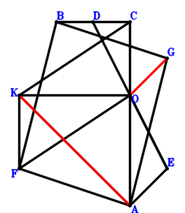
\(\because \) D is the midpoint of BC \(\therefore \small\overrightarrow{OD}=\dfrac{\small\overrightarrow{OB}}{2} + \dfrac{\small\overrightarrow{OC}}{2}\).\(\because \) O is the midpoint of DE \(\therefore \small\overrightarrow{OE}=- \small\overrightarrow{OD}=- \dfrac{\small\overrightarrow{OB}}{2} - \dfrac{\small\overrightarrow{OC}}{2}\).\(\because \) CKFO is a parallelogram \(\therefore \small\overrightarrow{OF}=- \small\overrightarrow{OC} + \small\overrightarrow{OK}\).\(\because \) BFAG is a parallelogram \(\therefore \small\overrightarrow{OG}=\small\overrightarrow{OA} + \small\overrightarrow{OB} - \small\overrightarrow{OF}=\small\overrightarrow{OA} + \small\overrightarrow{OB} + \small\overrightarrow{OC} - \small\overrightarrow{OK}\).\(\because \) KO=OA \(\therefore - \small\overrightarrow{OA}^{2} + \small\overrightarrow{OK}^{2}=0\) . . . . . . \(①\)\(\because \) KA⊥AE \(\therefore \small\overrightarrow{EA} \cdot \small\overrightarrow{KA}=\left(\small\overrightarrow{OA} - \small\overrightarrow{OE}\right) \cdot \left(\small\overrightarrow{OA} - \small\overrightarrow{OK}\right)=\left(\small\overrightarrow{OA} - \small\overrightarrow{OK}\right) \cdot \left(\small\overrightarrow{OA} + \dfrac{\small\overrightarrow{OB}}{2} + \dfrac{\small\overrightarrow{OC}}{2}\right)=\small\overrightarrow{OA}^{2} + \dfrac{\small\overrightarrow{OA} \cdot \small\overrightarrow{OB}}{2} + \dfrac{\small\overrightarrow{OA} \cdot \small\overrightarrow{OC}}{2} - \small\overrightarrow{OA} \cdot \small\overrightarrow{OK} - \dfrac{\small\overrightarrow{OB} \cdot \small\overrightarrow{OK}}{2} - \dfrac{\small\overrightarrow{OC} \cdot \small\overrightarrow{OK}}{2}=0\) . . . . . . \(②\)In conclusion, \(\small\overrightarrow{GO} \cdot \small\overrightarrow{KA}=- \small\overrightarrow{OG} \cdot \left(\small\overrightarrow{OA} - \small\overrightarrow{OK}\right)=- \left(\small\overrightarrow{OA} - \small\overrightarrow{OK}\right) \cdot \left(\small\overrightarrow{OA} + \small\overrightarrow{OB} + \small\overrightarrow{OC} - \small\overrightarrow{OK}\right)=- \small\overrightarrow{OA}^{2} - \small\overrightarrow{OA} \cdot \small\overrightarrow{OB} - \small\overrightarrow{OA} \cdot \small\overrightarrow{OC} + 2 \small\overrightarrow{OA} \cdot \small\overrightarrow{OK} + \small\overrightarrow{OB} \cdot \small\overrightarrow{OK} + \small\overrightarrow{OC} \cdot \small\overrightarrow{OK} - \small\overrightarrow{OK}^{2}=-①-2\cdot②=0\), that is, KA⊥OG.
Exercise 8797： Let CEAO and KAFB be parallelograms. CBOD is a trapezoid with BC//OD and BC=2OD. G is the midpoint of FC. ED⊥KA. KO=AO. Prove that KA⊥GO.
Exercise 8992： Let DBCE be a trapezoid with BC//DE and BC=2DE. F is the centroid of △BCA. K, F, G are collinear and KG=3FG. O is the midpoint of CD. KA⊥AE. KO=OA. Prove that KA⊥OG.
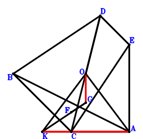
\(\because \) O is the midpoint of CD \(\therefore \small\overrightarrow{AD}=- \small\overrightarrow{AC} + 2 \small\overrightarrow{AO}\).\(\because \) BC//DE and BC=2DE \(\therefore \small\overrightarrow{AE}=- \dfrac{\small\overrightarrow{AB}}{2} - \dfrac{\small\overrightarrow{AC}}{2} + 2 \small\overrightarrow{AO}\).\(\because \) F is the centroid of △BCA \(\therefore \small\overrightarrow{AF}=\dfrac{\small\overrightarrow{AB}}{3} + \dfrac{\small\overrightarrow{AC}}{3}\).\(\because \) K, F, G are collinear and KG=3FG \(\therefore \small\overrightarrow{AG}=\dfrac{3 \small\overrightarrow{AF}}{2} - \dfrac{\small\overrightarrow{AK}}{2}=\dfrac{\small\overrightarrow{AB}}{2} + \dfrac{\small\overrightarrow{AC}}{2} - \dfrac{\small\overrightarrow{AK}}{2}\).\(\because \) KO=OA \(\therefore - \small\overrightarrow{OA}^{2} + \small\overrightarrow{OK}^{2}=- \small\overrightarrow{AO}^{2} + \left(\small\overrightarrow{AK} - \small\overrightarrow{AO}\right)^{2}=\small\overrightarrow{AK}^{2} - 2 \small\overrightarrow{AK} \cdot \small\overrightarrow{AO}=0\) . . . . . . \(①\)\(\because \) KA⊥AE \(\therefore \small\overrightarrow{AE} \cdot \small\overrightarrow{AK}=\small\overrightarrow{AK} \cdot \left(- \dfrac{\small\overrightarrow{AB}}{2} - \dfrac{\small\overrightarrow{AC}}{2} + 2 \small\overrightarrow{AO}\right)=- \dfrac{\small\overrightarrow{AB} \cdot \small\overrightarrow{AK}}{2} - \dfrac{\small\overrightarrow{AC} \cdot \small\overrightarrow{AK}}{2} + 2 \small\overrightarrow{AK} \cdot \small\overrightarrow{AO}=0\) . . . . . . \(②\)In conclusion, \(\small\overrightarrow{GO} \cdot \small\overrightarrow{KA}=- \small\overrightarrow{AK} \cdot \left(- \small\overrightarrow{AG} + \small\overrightarrow{AO}\right)=- \small\overrightarrow{AK} \cdot \left(- \dfrac{\small\overrightarrow{AB}}{2} - \dfrac{\small\overrightarrow{AC}}{2} + \dfrac{\small\overrightarrow{AK}}{2} + \small\overrightarrow{AO}\right)=\dfrac{\small\overrightarrow{AB} \cdot \small\overrightarrow{AK}}{2} + \dfrac{\small\overrightarrow{AC} \cdot \small\overrightarrow{AK}}{2} - \dfrac{\small\overrightarrow{AK}^{2}}{2} - \small\overrightarrow{AK} \cdot \small\overrightarrow{AO}=-1/2\cdot①-②=0\), that is, KA⊥OG.
Exercise 10344： Let FCOB be a parallelogram. O, D are the midpoints of DE, CB, respectively. G is the midpoint of AF and KH. KA⊥AE. KO=AO. Prove that KA⊥HO.
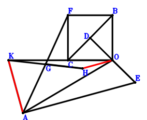
\(\because \) D is the midpoint of CB \(\therefore \small\overrightarrow{OD}=\dfrac{\small\overrightarrow{OB}}{2} + \dfrac{\small\overrightarrow{OC}}{2}\).\(\because \) O is the midpoint of DE \(\therefore \small\overrightarrow{OE}=- \small\overrightarrow{OD}=- \dfrac{\small\overrightarrow{OB}}{2} - \dfrac{\small\overrightarrow{OC}}{2}\).\(\because \) FCOB is a parallelogram \(\therefore \small\overrightarrow{OF}=\small\overrightarrow{OB} + \small\overrightarrow{OC}\).\(\because \) G is the midpoint of AF \(\therefore \small\overrightarrow{OG}=\dfrac{\small\overrightarrow{OA}}{2} + \dfrac{\small\overrightarrow{OF}}{2}=\dfrac{\small\overrightarrow{OA}}{2} + \dfrac{\small\overrightarrow{OB}}{2} + \dfrac{\small\overrightarrow{OC}}{2}\).\(\because \) G is the midpoint of KH \(\therefore \small\overrightarrow{OH}=2 \small\overrightarrow{OG} - \small\overrightarrow{OK}=\small\overrightarrow{OA} + \small\overrightarrow{OB} + \small\overrightarrow{OC} - \small\overrightarrow{OK}\).\(\because \) KO=AO \(\therefore - \small\overrightarrow{OA}^{2} + \small\overrightarrow{OK}^{2}=0\) . . . . . . \(①\)\(\because \) KA⊥AE \(\therefore \small\overrightarrow{EA} \cdot \small\overrightarrow{KA}=\left(\small\overrightarrow{OA} - \small\overrightarrow{OE}\right) \cdot \left(\small\overrightarrow{OA} - \small\overrightarrow{OK}\right)=\left(\small\overrightarrow{OA} - \small\overrightarrow{OK}\right) \cdot \left(\small\overrightarrow{OA} + \dfrac{\small\overrightarrow{OB}}{2} + \dfrac{\small\overrightarrow{OC}}{2}\right)=\small\overrightarrow{OA}^{2} + \dfrac{\small\overrightarrow{OA} \cdot \small\overrightarrow{OB}}{2} + \dfrac{\small\overrightarrow{OA} \cdot \small\overrightarrow{OC}}{2} - \small\overrightarrow{OA} \cdot \small\overrightarrow{OK} - \dfrac{\small\overrightarrow{OB} \cdot \small\overrightarrow{OK}}{2} - \dfrac{\small\overrightarrow{OC} \cdot \small\overrightarrow{OK}}{2}=0\) . . . . . . \(②\)In conclusion, \(\small\overrightarrow{HO} \cdot \small\overrightarrow{KA}=- \small\overrightarrow{OH} \cdot \left(\small\overrightarrow{OA} - \small\overrightarrow{OK}\right)=- \left(\small\overrightarrow{OA} - \small\overrightarrow{OK}\right) \cdot \left(\small\overrightarrow{OA} + \small\overrightarrow{OB} + \small\overrightarrow{OC} - \small\overrightarrow{OK}\right)=- \small\overrightarrow{OA}^{2} - \small\overrightarrow{OA} \cdot \small\overrightarrow{OB} - \small\overrightarrow{OA} \cdot \small\overrightarrow{OC} + 2 \small\overrightarrow{OA} \cdot \small\overrightarrow{OK} + \small\overrightarrow{OB} \cdot \small\overrightarrow{OK} + \small\overrightarrow{OC} \cdot \small\overrightarrow{OK} - \small\overrightarrow{OK}^{2}=-①-2\cdot②=0\), that is, KA⊥HO.
Exercise 10491： Let DEAO be a parallelogram. F, I, D are the midpoints of CA, HO, BC, respectively. G is the midpoint of KO and BH. EO⊥KA. KO=OA. Prove that KA⊥IF.
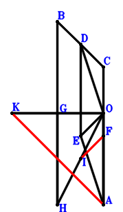
\(\because \) D is the midpoint of BC \(\therefore \small\overrightarrow{OD}=\dfrac{\small\overrightarrow{OB}}{2} + \dfrac{\small\overrightarrow{OC}}{2}\).\(\because \) DEAO is a parallelogram \(\therefore \small\overrightarrow{OE}=\small\overrightarrow{OA} + \dfrac{\small\overrightarrow{OB}}{2} + \dfrac{\small\overrightarrow{OC}}{2}\).\(\because \) F is the midpoint of CA \(\therefore \small\overrightarrow{OF}=\dfrac{\small\overrightarrow{OA}}{2} + \dfrac{\small\overrightarrow{OC}}{2}\).\(\because \) G is the midpoint of KO \(\therefore \small\overrightarrow{OG}=\dfrac{\small\overrightarrow{OK}}{2}\).\(\because \) G is the midpoint of BH \(\therefore \small\overrightarrow{OH}=- \small\overrightarrow{OB} + 2 \small\overrightarrow{OG}=- \small\overrightarrow{OB} + \small\overrightarrow{OK}\).\(\because \) I is the midpoint of HO \(\therefore \small\overrightarrow{OI}=\dfrac{\small\overrightarrow{OH}}{2}=- \dfrac{\small\overrightarrow{OB}}{2} + \dfrac{\small\overrightarrow{OK}}{2}\).\(\because \) KO=OA \(\therefore - \small\overrightarrow{OA}^{2} + \small\overrightarrow{OK}^{2}=0\) . . . . . . \(①\)\(\because \) EO⊥KA \(\therefore \small\overrightarrow{KA} \cdot \small\overrightarrow{OE}=\small\overrightarrow{OE} \cdot \left(\small\overrightarrow{OA} - \small\overrightarrow{OK}\right)=\left(\small\overrightarrow{OA} - \small\overrightarrow{OK}\right) \cdot \left(\small\overrightarrow{OA} + \dfrac{\small\overrightarrow{OB}}{2} + \dfrac{\small\overrightarrow{OC}}{2}\right)=\small\overrightarrow{OA}^{2} + \dfrac{\small\overrightarrow{OA} \cdot \small\overrightarrow{OB}}{2} + \dfrac{\small\overrightarrow{OA} \cdot \small\overrightarrow{OC}}{2} - \small\overrightarrow{OA} \cdot \small\overrightarrow{OK} - \dfrac{\small\overrightarrow{OB} \cdot \small\overrightarrow{OK}}{2} - \dfrac{\small\overrightarrow{OC} \cdot \small\overrightarrow{OK}}{2}=0\) . . . . . . \(②\)In conclusion, \(\small\overrightarrow{FI} \cdot \small\overrightarrow{KA}=\left(\small\overrightarrow{OA} - \small\overrightarrow{OK}\right) \cdot \left(- \small\overrightarrow{OF} + \small\overrightarrow{OI}\right)=\left(\small\overrightarrow{OA} - \small\overrightarrow{OK}\right) \cdot \left(- \dfrac{\small\overrightarrow{OA}}{2} - \dfrac{\small\overrightarrow{OB}}{2} - \dfrac{\small\overrightarrow{OC}}{2} + \dfrac{\small\overrightarrow{OK}}{2}\right)=- \dfrac{\small\overrightarrow{OA}^{2}}{2} - \dfrac{\small\overrightarrow{OA} \cdot \small\overrightarrow{OB}}{2} - \dfrac{\small\overrightarrow{OA} \cdot \small\overrightarrow{OC}}{2} + \small\overrightarrow{OA} \cdot \small\overrightarrow{OK} + \dfrac{\small\overrightarrow{OB} \cdot \small\overrightarrow{OK}}{2} + \dfrac{\small\overrightarrow{OC} \cdot \small\overrightarrow{OK}}{2} - \dfrac{\small\overrightarrow{OK}^{2}}{2}=-1/2\cdot①-②=0\), that is, KA⊥IF.
Exercise 10655： Let CBOD be a trapezoid with BC//OD and BC=2OD. HKGO is a trapezoid with KH//GO and KH=2GO. G is the midpoint of AC. E is the midpoint of OD and CF. KA⊥AF. KO=AO. Prove that BH⊥KA.
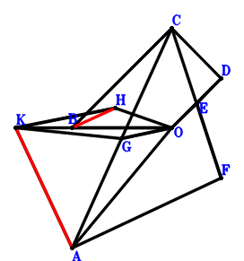
\(\because \) BC//OD and BC=2OD \(\therefore \small\overrightarrow{OD}=- \dfrac{\small\overrightarrow{OB}}{2} + \dfrac{\small\overrightarrow{OC}}{2}\).\(\because \) E is the midpoint of OD \(\therefore \small\overrightarrow{OE}=\dfrac{\small\overrightarrow{OD}}{2}=- \dfrac{\small\overrightarrow{OB}}{4} + \dfrac{\small\overrightarrow{OC}}{4}\).\(\because \) E is the midpoint of CF \(\therefore \small\overrightarrow{OF}=- \small\overrightarrow{OC} + 2 \small\overrightarrow{OE}=- \dfrac{\small\overrightarrow{OB}}{2} - \dfrac{\small\overrightarrow{OC}}{2}\).\(\because \) G is the midpoint of AC \(\therefore \small\overrightarrow{OG}=\dfrac{\small\overrightarrow{OA}}{2} + \dfrac{\small\overrightarrow{OC}}{2}\).\(\because \) KH//GO and KH=2GO \(\therefore \small\overrightarrow{OH}=- 2 \small\overrightarrow{OG} + \small\overrightarrow{OK}=- \small\overrightarrow{OA} - \small\overrightarrow{OC} + \small\overrightarrow{OK}\).\(\because \) KO=AO \(\therefore - \small\overrightarrow{OA}^{2} + \small\overrightarrow{OK}^{2}=0\) . . . . . . \(①\)\(\because \) KA⊥AF \(\therefore \small\overrightarrow{FA} \cdot \small\overrightarrow{KA}=\left(\small\overrightarrow{OA} - \small\overrightarrow{OF}\right) \cdot \left(\small\overrightarrow{OA} - \small\overrightarrow{OK}\right)=\left(\small\overrightarrow{OA} - \small\overrightarrow{OK}\right) \cdot \left(\small\overrightarrow{OA} + \dfrac{\small\overrightarrow{OB}}{2} + \dfrac{\small\overrightarrow{OC}}{2}\right)=\small\overrightarrow{OA}^{2} + \dfrac{\small\overrightarrow{OA} \cdot \small\overrightarrow{OB}}{2} + \dfrac{\small\overrightarrow{OA} \cdot \small\overrightarrow{OC}}{2} - \small\overrightarrow{OA} \cdot \small\overrightarrow{OK} - \dfrac{\small\overrightarrow{OB} \cdot \small\overrightarrow{OK}}{2} - \dfrac{\small\overrightarrow{OC} \cdot \small\overrightarrow{OK}}{2}=0\) . . . . . . \(②\)In conclusion, \(\small\overrightarrow{BH} \cdot \small\overrightarrow{KA}=\left(\small\overrightarrow{OA} - \small\overrightarrow{OK}\right) \cdot \left(- \small\overrightarrow{OB} + \small\overrightarrow{OH}\right)=\left(\small\overrightarrow{OA} - \small\overrightarrow{OK}\right) \cdot \left(- \small\overrightarrow{OA} - \small\overrightarrow{OB} - \small\overrightarrow{OC} + \small\overrightarrow{OK}\right)=- \small\overrightarrow{OA}^{2} - \small\overrightarrow{OA} \cdot \small\overrightarrow{OB} - \small\overrightarrow{OA} \cdot \small\overrightarrow{OC} + 2 \small\overrightarrow{OA} \cdot \small\overrightarrow{OK} + \small\overrightarrow{OB} \cdot \small\overrightarrow{OK} + \small\overrightarrow{OC} \cdot \small\overrightarrow{OK} - \small\overrightarrow{OK}^{2}=-①-2\cdot②=0\), that is, BH⊥KA.
Exercise 10979： Let AKHO be a trapezoid with KA//HO and KA=2HO. H, E, G are the midpoints of CI, DO, FA, respectively. D is the midpoint of FO and BC. KA⊥GE. KO=AO. Prove that BI⊥KA.
\(\because \) D is the midpoint of BC \(\therefore \small\overrightarrow{OD}=\dfrac{\small\overrightarrow{OB}}{2} + \dfrac{\small\overrightarrow{OC}}{2}\).\(\because \) E is the midpoint of DO \(\therefore \small\overrightarrow{OE}=\dfrac{\small\overrightarrow{OD}}{2}=\dfrac{\small\overrightarrow{OB}}{4} + \dfrac{\small\overrightarrow{OC}}{4}\).\(\because \) D is the midpoint of FO \(\therefore \small\overrightarrow{OF}=2 \small\overrightarrow{OD}=\small\overrightarrow{OB} + \small\overrightarrow{OC}\).\(\because \) G is the midpoint of FA \(\therefore \small\overrightarrow{OG}=\dfrac{\small\overrightarrow{OA}}{2} + \dfrac{\small\overrightarrow{OF}}{2}=\dfrac{\small\overrightarrow{OA}}{2} + \dfrac{\small\overrightarrow{OB}}{2} + \dfrac{\small\overrightarrow{OC}}{2}\).\(\because \) KA//HO and KA=2HO \(\therefore \small\overrightarrow{OH}=- \dfrac{\small\overrightarrow{OA}}{2} + \dfrac{\small\overrightarrow{OK}}{2}\).\(\because \) H is the midpoint of CI \(\therefore \small\overrightarrow{OI}=- \small\overrightarrow{OC} + 2 \small\overrightarrow{OH}=- \small\overrightarrow{OA} - \small\overrightarrow{OC} + \small\overrightarrow{OK}\).\(\because \) KO=AO \(\therefore - \small\overrightarrow{OA}^{2} + \small\overrightarrow{OK}^{2}=0\) . . . . . . \(①\)\(\because \) KA⊥GE \(\therefore \small\overrightarrow{EG} \cdot \small\overrightarrow{KA}=\left(\small\overrightarrow{OA} - \small\overrightarrow{OK}\right) \cdot \left(- \small\overrightarrow{OE} + \small\overrightarrow{OG}\right)=\left(\small\overrightarrow{OA} - \small\overrightarrow{OK}\right) \cdot \left(\dfrac{\small\overrightarrow{OA}}{2} + \dfrac{\small\overrightarrow{OB}}{4} + \dfrac{\small\overrightarrow{OC}}{4}\right)=\dfrac{\small\overrightarrow{OA}^{2}}{2} + \dfrac{\small\overrightarrow{OA} \cdot \small\overrightarrow{OB}}{4} + \dfrac{\small\overrightarrow{OA} \cdot \small\overrightarrow{OC}}{4} - \dfrac{\small\overrightarrow{OA} \cdot \small\overrightarrow{OK}}{2} - \dfrac{\small\overrightarrow{OB} \cdot \small\overrightarrow{OK}}{4} - \dfrac{\small\overrightarrow{OC} \cdot \small\overrightarrow{OK}}{4}=0\) . . . . . . \(②\)In conclusion, \(\small\overrightarrow{BI} \cdot \small\overrightarrow{KA}=\left(\small\overrightarrow{OA} - \small\overrightarrow{OK}\right) \cdot \left(- \small\overrightarrow{OB} + \small\overrightarrow{OI}\right)=\left(\small\overrightarrow{OA} - \small\overrightarrow{OK}\right) \cdot \left(- \small\overrightarrow{OA} - \small\overrightarrow{OB} - \small\overrightarrow{OC} + \small\overrightarrow{OK}\right)=- \small\overrightarrow{OA}^{2} - \small\overrightarrow{OA} \cdot \small\overrightarrow{OB} - \small\overrightarrow{OA} \cdot \small\overrightarrow{OC} + 2 \small\overrightarrow{OA} \cdot \small\overrightarrow{OK} + \small\overrightarrow{OB} \cdot \small\overrightarrow{OK} + \small\overrightarrow{OC} \cdot \small\overrightarrow{OK} - \small\overrightarrow{OK}^{2}=-①-4\cdot②=0\), that is, BI⊥KA.
Exercise 12963： Let BOEK be a parallelogram. GCHO is a trapezoid with GC//OH and GC=2OH. GCOB is a trapezoid with GB//CO and GB=2CO. F, D are the midpoints of OE, CA, respectively. OK=AO. Given that A, H, K are collinear and AK//DF, prove that \(AK·DF=AH·AK\).
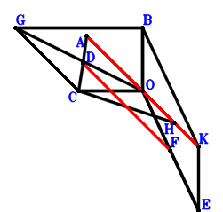
\(\because \) D is the midpoint of CA \(\therefore \small\overrightarrow{OD}=\dfrac{\small\overrightarrow{OA}}{2} + \dfrac{\small\overrightarrow{OC}}{2}\).\(\because \) BOEK is a parallelogram \(\therefore \small\overrightarrow{OE}=- \small\overrightarrow{OB} + \small\overrightarrow{OK}\).\(\because \) F is the midpoint of OE \(\therefore \small\overrightarrow{OF}=\dfrac{\small\overrightarrow{OE}}{2}=- \dfrac{\small\overrightarrow{OB}}{2} + \dfrac{\small\overrightarrow{OK}}{2}\).\(\because \) GB//CO and GB=2CO \(\therefore \small\overrightarrow{OG}=\small\overrightarrow{OB} + 2 \small\overrightarrow{OC}\).\(\because \) GC//OH and GC=2OH \(\therefore \small\overrightarrow{OH}=\dfrac{\small\overrightarrow{OC}}{2} - \dfrac{\small\overrightarrow{OG}}{2}=- \dfrac{\small\overrightarrow{OB}}{2} - \dfrac{\small\overrightarrow{OC}}{2}\).\(\because \) OK=AO \( \therefore- \small\overrightarrow{OA}^{2} + \small\overrightarrow{OK}^{2}=0.\)In conclusion, \(\small\overrightarrow{DF} \cdot \small\overrightarrow{KA} + \small\overrightarrow{HA} \cdot \small\overrightarrow{KA}=\left(\small\overrightarrow{OA} - \small\overrightarrow{OH}\right) \cdot \left(\small\overrightarrow{OA} - \small\overrightarrow{OK}\right) + \left(\small\overrightarrow{OA} - \small\overrightarrow{OK}\right) \cdot \left(- \small\overrightarrow{OD} + \small\overrightarrow{OF}\right)=\left(\small\overrightarrow{OA} - \small\overrightarrow{OK}\right) \cdot \left(\small\overrightarrow{OA} + \dfrac{\small\overrightarrow{OB}}{2} + \dfrac{\small\overrightarrow{OC}}{2}\right) + \left(\small\overrightarrow{OA} - \small\overrightarrow{OK}\right) \cdot \left(- \dfrac{\small\overrightarrow{OA}}{2} - \dfrac{\small\overrightarrow{OB}}{2} - \dfrac{\small\overrightarrow{OC}}{2} + \dfrac{\small\overrightarrow{OK}}{2}\right)=\dfrac{\small\overrightarrow{OA}^{2}}{2} - \dfrac{\small\overrightarrow{OK}^{2}}{2}=0\)\(\because\) A, H, K are collinear and AK//DF \(\therefore\) \(AK·DF=AH·AK\).
Exercise 13432： Let EBFA be a parallelogram. G is the centroid of △CBA. K, H, O are collinear and KH=2HO. O, D are the midpoints of CE, CB, respectively. DF⊥KA. KO=OA. Prove that KA⊥HG.
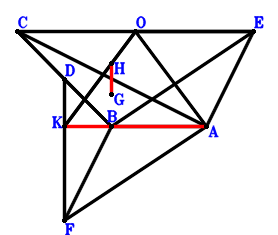
\(\because \) D is the midpoint of CB \(\therefore \small\overrightarrow{AD}=\dfrac{\small\overrightarrow{AB}}{2} + \dfrac{\small\overrightarrow{AC}}{2}\).\(\because \) O is the midpoint of CE \(\therefore \small\overrightarrow{AE}=- \small\overrightarrow{AC} + 2 \small\overrightarrow{AO}\).\(\because \) EBFA is a parallelogram \(\therefore \small\overrightarrow{AF}=\small\overrightarrow{AB} - \small\overrightarrow{AE}=\small\overrightarrow{AB} + \small\overrightarrow{AC} - 2 \small\overrightarrow{AO}\).\(\because \) G is the centroid of △CBA \(\therefore \small\overrightarrow{AG}=\dfrac{\small\overrightarrow{AB}}{3} + \dfrac{\small\overrightarrow{AC}}{3}\).\(\because \) K, H, O are collinear and KH=2HO \(\therefore \small\overrightarrow{AH}=\dfrac{\small\overrightarrow{AK}}{3} + \dfrac{2 \small\overrightarrow{AO}}{3}\).\(\because \) KO=OA \(\therefore - \small\overrightarrow{OA}^{2} + \small\overrightarrow{OK}^{2}=- \small\overrightarrow{AO}^{2} + \left(\small\overrightarrow{AK} - \small\overrightarrow{AO}\right)^{2}=\small\overrightarrow{AK}^{2} - 2 \small\overrightarrow{AK} \cdot \small\overrightarrow{AO}=0\) . . . . . . \(①\)\(\because \) DF⊥KA \(\therefore \small\overrightarrow{DF} \cdot \small\overrightarrow{KA}=- \small\overrightarrow{AK} \cdot \left(- \small\overrightarrow{AD} + \small\overrightarrow{AF}\right)=- \small\overrightarrow{AK} \cdot \left(\dfrac{\small\overrightarrow{AB}}{2} + \dfrac{\small\overrightarrow{AC}}{2} - 2 \small\overrightarrow{AO}\right)=- \dfrac{\small\overrightarrow{AB} \cdot \small\overrightarrow{AK}}{2} - \dfrac{\small\overrightarrow{AC} \cdot \small\overrightarrow{AK}}{2} + 2 \small\overrightarrow{AK} \cdot \small\overrightarrow{AO}=0\) . . . . . . \(②\)In conclusion, \(\small\overrightarrow{GH} \cdot \small\overrightarrow{KA}=- \small\overrightarrow{AK} \cdot \left(- \small\overrightarrow{AG} + \small\overrightarrow{AH}\right)=- \small\overrightarrow{AK} \cdot \left(- \dfrac{\small\overrightarrow{AB}}{3} - \dfrac{\small\overrightarrow{AC}}{3} + \dfrac{\small\overrightarrow{AK}}{3} + \dfrac{2 \small\overrightarrow{AO}}{3}\right)=\dfrac{\small\overrightarrow{AB} \cdot \small\overrightarrow{AK}}{3} + \dfrac{\small\overrightarrow{AC} \cdot \small\overrightarrow{AK}}{3} - \dfrac{\small\overrightarrow{AK}^{2}}{3} - \dfrac{2 \small\overrightarrow{AK} \cdot \small\overrightarrow{AO}}{3}=-1/3\cdot①-2/3\cdot②=0\), that is, KA⊥HG.
Exercise 13664： Let HIAO be a parallelogram. CBDO is a trapezoid with BC//DO and BC=2DO. E is the midpoint of DO and BF. G is the midpoint of HO and BC. KA⊥AF. KO=AO. Prove that IK⊥KA.
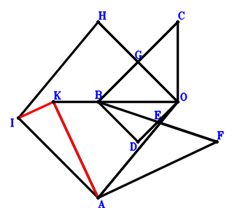
\(\because \) BC//DO and BC=2DO \(\therefore \small\overrightarrow{OD}=\dfrac{\small\overrightarrow{OB}}{2} - \dfrac{\small\overrightarrow{OC}}{2}\).\(\because \) E is the midpoint of DO \(\therefore \small\overrightarrow{OE}=\dfrac{\small\overrightarrow{OD}}{2}=\dfrac{\small\overrightarrow{OB}}{4} - \dfrac{\small\overrightarrow{OC}}{4}\).\(\because \) E is the midpoint of BF \(\therefore \small\overrightarrow{OF}=- \small\overrightarrow{OB} + 2 \small\overrightarrow{OE}=- \dfrac{\small\overrightarrow{OB}}{2} - \dfrac{\small\overrightarrow{OC}}{2}\).\(\because \) G is the midpoint of BC \(\therefore \small\overrightarrow{OG}=\dfrac{\small\overrightarrow{OB}}{2} + \dfrac{\small\overrightarrow{OC}}{2}\).\(\because \) G is the midpoint of HO \(\therefore \small\overrightarrow{OH}=2 \small\overrightarrow{OG}=\small\overrightarrow{OB} + \small\overrightarrow{OC}\).\(\because \) HIAO is a parallelogram \(\therefore \small\overrightarrow{OI}=\small\overrightarrow{OA} + \small\overrightarrow{OB} + \small\overrightarrow{OC}\).\(\because \) KO=AO \(\therefore - \small\overrightarrow{OA}^{2} + \small\overrightarrow{OK}^{2}=0\) . . . . . . \(①\)\(\because \) KA⊥AF \(\therefore \small\overrightarrow{FA} \cdot \small\overrightarrow{KA}=\left(\small\overrightarrow{OA} - \small\overrightarrow{OF}\right) \cdot \left(\small\overrightarrow{OA} - \small\overrightarrow{OK}\right)=\left(\small\overrightarrow{OA} - \small\overrightarrow{OK}\right) \cdot \left(\small\overrightarrow{OA} + \dfrac{\small\overrightarrow{OB}}{2} + \dfrac{\small\overrightarrow{OC}}{2}\right)=\small\overrightarrow{OA}^{2} + \dfrac{\small\overrightarrow{OA} \cdot \small\overrightarrow{OB}}{2} + \dfrac{\small\overrightarrow{OA} \cdot \small\overrightarrow{OC}}{2} - \small\overrightarrow{OA} \cdot \small\overrightarrow{OK} - \dfrac{\small\overrightarrow{OB} \cdot \small\overrightarrow{OK}}{2} - \dfrac{\small\overrightarrow{OC} \cdot \small\overrightarrow{OK}}{2}=0\) . . . . . . \(②\)In conclusion, \(\small\overrightarrow{IK} \cdot \small\overrightarrow{KA}=\left(\small\overrightarrow{OA} - \small\overrightarrow{OK}\right) \cdot \left(- \small\overrightarrow{OI} + \small\overrightarrow{OK}\right)=\left(\small\overrightarrow{OA} - \small\overrightarrow{OK}\right) \cdot \left(- \small\overrightarrow{OA} - \small\overrightarrow{OB} - \small\overrightarrow{OC} + \small\overrightarrow{OK}\right)=- \small\overrightarrow{OA}^{2} - \small\overrightarrow{OA} \cdot \small\overrightarrow{OB} - \small\overrightarrow{OA} \cdot \small\overrightarrow{OC} + 2 \small\overrightarrow{OA} \cdot \small\overrightarrow{OK} + \small\overrightarrow{OB} \cdot \small\overrightarrow{OK} + \small\overrightarrow{OC} \cdot \small\overrightarrow{OK} - \small\overrightarrow{OK}^{2}=-①-2\cdot②=0\), that is, IK⊥KA.
Exercise 14266： Let BOGF and BKHO be parallelograms. D is the midpoint of CB. I is the midpoint of HO and CJ. E is the midpoint of CF and DO. KA⊥AG. KO=AO. Prove that KA⊥AJ.
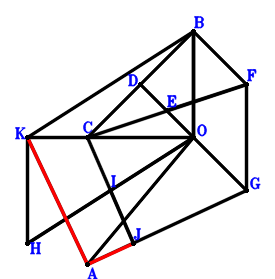
\(\because \) D is the midpoint of CB \(\therefore \small\overrightarrow{OD}=\dfrac{\small\overrightarrow{OB}}{2} + \dfrac{\small\overrightarrow{OC}}{2}\).\(\because \) E is the midpoint of DO \(\therefore \small\overrightarrow{OE}=\dfrac{\small\overrightarrow{OD}}{2}=\dfrac{\small\overrightarrow{OB}}{4} + \dfrac{\small\overrightarrow{OC}}{4}\).\(\because \) E is the midpoint of CF \(\therefore \small\overrightarrow{OF}=- \small\overrightarrow{OC} + 2 \small\overrightarrow{OE}=\dfrac{\small\overrightarrow{OB}}{2} - \dfrac{\small\overrightarrow{OC}}{2}\).\(\because \) BOGF is a parallelogram \(\therefore \small\overrightarrow{OG}=- \dfrac{\small\overrightarrow{OB}}{2} - \dfrac{\small\overrightarrow{OC}}{2}\).\(\because \) BKHO is a parallelogram \(\therefore \small\overrightarrow{OH}=- \small\overrightarrow{OB} + \small\overrightarrow{OK}\).\(\because \) I is the midpoint of HO \(\therefore \small\overrightarrow{OI}=\dfrac{\small\overrightarrow{OH}}{2}=- \dfrac{\small\overrightarrow{OB}}{2} + \dfrac{\small\overrightarrow{OK}}{2}\).\(\because \) I is the midpoint of CJ \(\therefore \small\overrightarrow{OJ}=- \small\overrightarrow{OC} + 2 \small\overrightarrow{OI}=- \small\overrightarrow{OB} - \small\overrightarrow{OC} + \small\overrightarrow{OK}\).\(\because \) KO=AO \(\therefore - \small\overrightarrow{OA}^{2} + \small\overrightarrow{OK}^{2}=0\) . . . . . . \(①\)\(\because \) KA⊥AG \(\therefore \small\overrightarrow{GA} \cdot \small\overrightarrow{KA}=\left(\small\overrightarrow{OA} - \small\overrightarrow{OG}\right) \cdot \left(\small\overrightarrow{OA} - \small\overrightarrow{OK}\right)=\left(\small\overrightarrow{OA} - \small\overrightarrow{OK}\right) \cdot \left(\small\overrightarrow{OA} + \dfrac{\small\overrightarrow{OB}}{2} + \dfrac{\small\overrightarrow{OC}}{2}\right)=\small\overrightarrow{OA}^{2} + \dfrac{\small\overrightarrow{OA} \cdot \small\overrightarrow{OB}}{2} + \dfrac{\small\overrightarrow{OA} \cdot \small\overrightarrow{OC}}{2} - \small\overrightarrow{OA} \cdot \small\overrightarrow{OK} - \dfrac{\small\overrightarrow{OB} \cdot \small\overrightarrow{OK}}{2} - \dfrac{\small\overrightarrow{OC} \cdot \small\overrightarrow{OK}}{2}=0\) . . . . . . \(②\)In conclusion, \(\small\overrightarrow{AJ} \cdot \small\overrightarrow{KA}=\left(- \small\overrightarrow{OA} + \small\overrightarrow{OJ}\right) \cdot \left(\small\overrightarrow{OA} - \small\overrightarrow{OK}\right)=\left(\small\overrightarrow{OA} - \small\overrightarrow{OK}\right) \cdot \left(- \small\overrightarrow{OA} - \small\overrightarrow{OB} - \small\overrightarrow{OC} + \small\overrightarrow{OK}\right)=- \small\overrightarrow{OA}^{2} - \small\overrightarrow{OA} \cdot \small\overrightarrow{OB} - \small\overrightarrow{OA} \cdot \small\overrightarrow{OC} + 2 \small\overrightarrow{OA} \cdot \small\overrightarrow{OK} + \small\overrightarrow{OB} \cdot \small\overrightarrow{OK} + \small\overrightarrow{OC} \cdot \small\overrightarrow{OK} - \small\overrightarrow{OK}^{2}=-①-2\cdot②=0\), that is, KA⊥AJ.
Exercise 14460： Let CBDE be a trapezoid with BC//DE and BC=2DE. FGHO is a trapezoid with HO//GF and HO=2GF. G, O, F are the midpoints of KO, CD, BC, respectively. KA⊥AE. KO=AO. Prove that KA⊥AH.
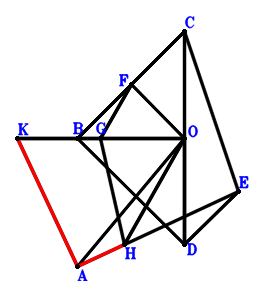
\(\because \) O is the midpoint of CD \(\therefore \small\overrightarrow{OD}=- \small\overrightarrow{OC}\).\(\because \) BC//DE and BC=2DE \(\therefore \small\overrightarrow{OE}=- \dfrac{\small\overrightarrow{OB}}{2} - \dfrac{\small\overrightarrow{OC}}{2}\).\(\because \) F is the midpoint of BC \(\therefore \small\overrightarrow{OF}=\dfrac{\small\overrightarrow{OB}}{2} + \dfrac{\small\overrightarrow{OC}}{2}\).\(\because \) G is the midpoint of KO \(\therefore \small\overrightarrow{OG}=\dfrac{\small\overrightarrow{OK}}{2}\).\(\because \) HO//GF and HO=2GF \(\therefore \small\overrightarrow{OH}=- \small\overrightarrow{OB} - \small\overrightarrow{OC} + 2 \small\overrightarrow{OG}=- \small\overrightarrow{OB} - \small\overrightarrow{OC} + \small\overrightarrow{OK}\).\(\because \) KO=AO \(\therefore - \small\overrightarrow{OA}^{2} + \small\overrightarrow{OK}^{2}=0\) . . . . . . \(①\)\(\because \) KA⊥AE \(\therefore \small\overrightarrow{EA} \cdot \small\overrightarrow{KA}=\left(\small\overrightarrow{OA} - \small\overrightarrow{OE}\right) \cdot \left(\small\overrightarrow{OA} - \small\overrightarrow{OK}\right)=\left(\small\overrightarrow{OA} - \small\overrightarrow{OK}\right) \cdot \left(\small\overrightarrow{OA} + \dfrac{\small\overrightarrow{OB}}{2} + \dfrac{\small\overrightarrow{OC}}{2}\right)=\small\overrightarrow{OA}^{2} + \dfrac{\small\overrightarrow{OA} \cdot \small\overrightarrow{OB}}{2} + \dfrac{\small\overrightarrow{OA} \cdot \small\overrightarrow{OC}}{2} - \small\overrightarrow{OA} \cdot \small\overrightarrow{OK} - \dfrac{\small\overrightarrow{OB} \cdot \small\overrightarrow{OK}}{2} - \dfrac{\small\overrightarrow{OC} \cdot \small\overrightarrow{OK}}{2}=0\) . . . . . . \(②\)In conclusion, \(\small\overrightarrow{AH} \cdot \small\overrightarrow{KA}=\left(- \small\overrightarrow{OA} + \small\overrightarrow{OH}\right) \cdot \left(\small\overrightarrow{OA} - \small\overrightarrow{OK}\right)=\left(\small\overrightarrow{OA} - \small\overrightarrow{OK}\right) \cdot \left(- \small\overrightarrow{OA} - \small\overrightarrow{OB} - \small\overrightarrow{OC} + \small\overrightarrow{OK}\right)=- \small\overrightarrow{OA}^{2} - \small\overrightarrow{OA} \cdot \small\overrightarrow{OB} - \small\overrightarrow{OA} \cdot \small\overrightarrow{OC} + 2 \small\overrightarrow{OA} \cdot \small\overrightarrow{OK} + \small\overrightarrow{OB} \cdot \small\overrightarrow{OK} + \small\overrightarrow{OC} \cdot \small\overrightarrow{OK} - \small\overrightarrow{OK}^{2}=-①-2\cdot②=0\), that is, KA⊥AH.
Exercise 14832： Let ECDA and FCOA be parallelograms. FCBG is a trapezoid with CB//FG and CB=2FG. O is the midpoint of BD. EK⊥KA. KO=AO. Prove that KA⊥GO.
Exercise 15777： Let HIOC be a parallelogram. CBEO is a trapezoid with BE//CO and BE=2CO. CBOD is a trapezoid with CD//BO and CD=2BO. F is the midpoint of ED. G is the midpoint of HA and OK. FA⊥AK. OK=OA. Prove that BI⊥KA.
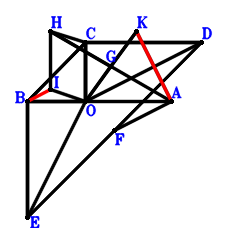
\(\because \) CD//BO and CD=2BO \(\therefore \small\overrightarrow{OD}=- 2 \small\overrightarrow{OB} + \small\overrightarrow{OC}\).\(\because \) BE//CO and BE=2CO \(\therefore \small\overrightarrow{OE}=\small\overrightarrow{OB} - 2 \small\overrightarrow{OC}\).\(\because \) F is the midpoint of ED \(\therefore \small\overrightarrow{OF}=- \small\overrightarrow{OB} + \dfrac{\small\overrightarrow{OC}}{2} + \dfrac{\small\overrightarrow{OE}}{2}=- \dfrac{\small\overrightarrow{OB}}{2} - \dfrac{\small\overrightarrow{OC}}{2}\).\(\because \) G is the midpoint of OK \(\therefore \small\overrightarrow{OG}=\dfrac{\small\overrightarrow{OK}}{2}\).\(\because \) G is the midpoint of HA \(\therefore \small\overrightarrow{OH}=- \small\overrightarrow{OA} + 2 \small\overrightarrow{OG}=- \small\overrightarrow{OA} + \small\overrightarrow{OK}\).\(\because \) HIOC is a parallelogram \(\therefore \small\overrightarrow{OI}=- \small\overrightarrow{OA} - \small\overrightarrow{OC} + \small\overrightarrow{OK}\).\(\because \) OK=OA \(\therefore - \small\overrightarrow{OA}^{2} + \small\overrightarrow{OK}^{2}=0\) . . . . . . \(①\)\(\because \) FA⊥AK \(\therefore \small\overrightarrow{FA} \cdot \small\overrightarrow{KA}=\left(\small\overrightarrow{OA} - \small\overrightarrow{OF}\right) \cdot \left(\small\overrightarrow{OA} - \small\overrightarrow{OK}\right)=\left(\small\overrightarrow{OA} - \small\overrightarrow{OK}\right) \cdot \left(\small\overrightarrow{OA} + \dfrac{\small\overrightarrow{OB}}{2} + \dfrac{\small\overrightarrow{OC}}{2}\right)=\small\overrightarrow{OA}^{2} + \dfrac{\small\overrightarrow{OA} \cdot \small\overrightarrow{OB}}{2} + \dfrac{\small\overrightarrow{OA} \cdot \small\overrightarrow{OC}}{2} - \small\overrightarrow{OA} \cdot \small\overrightarrow{OK} - \dfrac{\small\overrightarrow{OB} \cdot \small\overrightarrow{OK}}{2} - \dfrac{\small\overrightarrow{OC} \cdot \small\overrightarrow{OK}}{2}=0\) . . . . . . \(②\)In conclusion, \(\small\overrightarrow{BI} \cdot \small\overrightarrow{KA}=\left(\small\overrightarrow{OA} - \small\overrightarrow{OK}\right) \cdot \left(- \small\overrightarrow{OB} + \small\overrightarrow{OI}\right)=\left(\small\overrightarrow{OA} - \small\overrightarrow{OK}\right) \cdot \left(- \small\overrightarrow{OA} - \small\overrightarrow{OB} - \small\overrightarrow{OC} + \small\overrightarrow{OK}\right)=- \small\overrightarrow{OA}^{2} - \small\overrightarrow{OA} \cdot \small\overrightarrow{OB} - \small\overrightarrow{OA} \cdot \small\overrightarrow{OC} + 2 \small\overrightarrow{OA} \cdot \small\overrightarrow{OK} + \small\overrightarrow{OB} \cdot \small\overrightarrow{OK} + \small\overrightarrow{OC} \cdot \small\overrightarrow{OK} - \small\overrightarrow{OK}^{2}=-①-2\cdot②=0\), that is, BI⊥KA.
Exercise 16129： Let KIHA be a parallelogram. G, O, D are the midpoints of CF, HB, CB, respectively. E is the midpoint of DF and BA. KA⊥GO. KO=OA. Prove that CI⊥KA.
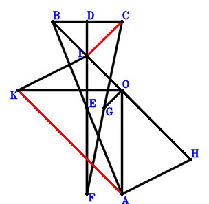
\(\because \) D is the midpoint of CB \(\therefore \small\overrightarrow{AD}=\dfrac{\small\overrightarrow{AB}}{2} + \dfrac{\small\overrightarrow{AC}}{2}\).\(\because \) E is the midpoint of BA \(\therefore \small\overrightarrow{AE}=\dfrac{\small\overrightarrow{AB}}{2}\).\(\because \) E is the midpoint of DF \(\therefore \small\overrightarrow{AF}=\small\overrightarrow{AB} - \small\overrightarrow{AD}=\dfrac{\small\overrightarrow{AB}}{2} - \dfrac{\small\overrightarrow{AC}}{2}\).\(\because \) G is the midpoint of CF \(\therefore \small\overrightarrow{AG}=\dfrac{\small\overrightarrow{AC}}{2} + \dfrac{\small\overrightarrow{AF}}{2}=\dfrac{\small\overrightarrow{AB}}{4} + \dfrac{\small\overrightarrow{AC}}{4}\).\(\because \) O is the midpoint of HB \(\therefore \small\overrightarrow{AH}=- \small\overrightarrow{AB} + 2 \small\overrightarrow{AO}\).\(\because \) KIHA is a parallelogram \(\therefore \small\overrightarrow{AI}=- \small\overrightarrow{AB} + \small\overrightarrow{AK} + 2 \small\overrightarrow{AO}\).\(\because \) KO=OA \(\therefore - \small\overrightarrow{OA}^{2} + \small\overrightarrow{OK}^{2}=- \small\overrightarrow{AO}^{2} + \left(\small\overrightarrow{AK} - \small\overrightarrow{AO}\right)^{2}=\small\overrightarrow{AK}^{2} - 2 \small\overrightarrow{AK} \cdot \small\overrightarrow{AO}=0\) . . . . . . \(①\)\(\because \) KA⊥GO \(\therefore \small\overrightarrow{KA} \cdot \small\overrightarrow{OG}=- \small\overrightarrow{AK} \cdot \left(\small\overrightarrow{AG} - \small\overrightarrow{AO}\right)=- \small\overrightarrow{AK} \cdot \left(\dfrac{\small\overrightarrow{AB}}{4} + \dfrac{\small\overrightarrow{AC}}{4} - \small\overrightarrow{AO}\right)=- \dfrac{\small\overrightarrow{AB} \cdot \small\overrightarrow{AK}}{4} - \dfrac{\small\overrightarrow{AC} \cdot \small\overrightarrow{AK}}{4} + \small\overrightarrow{AK} \cdot \small\overrightarrow{AO}=0\) . . . . . . \(②\)In conclusion, \(\small\overrightarrow{CI} \cdot \small\overrightarrow{KA}=- \small\overrightarrow{AK} \cdot \left(- \small\overrightarrow{AC} + \small\overrightarrow{AI}\right)=- \small\overrightarrow{AK} \cdot \left(- \small\overrightarrow{AB} - \small\overrightarrow{AC} + \small\overrightarrow{AK} + 2 \small\overrightarrow{AO}\right)=\small\overrightarrow{AB} \cdot \small\overrightarrow{AK} + \small\overrightarrow{AC} \cdot \small\overrightarrow{AK} - \small\overrightarrow{AK}^{2} - 2 \small\overrightarrow{AK} \cdot \small\overrightarrow{AO}=-①-4\cdot②=0\), that is, CI⊥KA.
Exercise 16437： Let BCAH be a trapezoid with CB//AH and CB=2AH. O is the midpoint of GC and DB. E is the midpoint of FC and KD. KO=OA. Given that F, K, A are collinear and GH//KA, prove that \(FA·KA=2·GH·KA\).
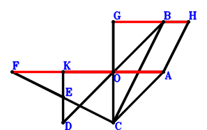
\(\because \) O is the midpoint of DB \(\therefore \small\overrightarrow{AD}=- \small\overrightarrow{AB} + 2 \small\overrightarrow{AO}\).\(\because \) E is the midpoint of KD \(\therefore \small\overrightarrow{AE}=\dfrac{\small\overrightarrow{AD}}{2} + \dfrac{\small\overrightarrow{AK}}{2}=- \dfrac{\small\overrightarrow{AB}}{2} + \dfrac{\small\overrightarrow{AK}}{2} + \small\overrightarrow{AO}\).\(\because \) E is the midpoint of FC \(\therefore \small\overrightarrow{AF}=- \small\overrightarrow{AC} + 2 \small\overrightarrow{AE}=- \small\overrightarrow{AB} - \small\overrightarrow{AC} + \small\overrightarrow{AK} + 2 \small\overrightarrow{AO}\).\(\because \) O is the midpoint of GC \(\therefore \small\overrightarrow{AG}=- \small\overrightarrow{AC} + 2 \small\overrightarrow{AO}\).\(\because \) CB//AH and CB=2AH \(\therefore \small\overrightarrow{AH}=\dfrac{\small\overrightarrow{AB}}{2} - \dfrac{\small\overrightarrow{AC}}{2}\).\(\because \) KO=OA \( \therefore- \small\overrightarrow{OA}^{2} + \small\overrightarrow{OK}^{2}=- \small\overrightarrow{AO}^{2} + \left(\small\overrightarrow{AK} - \small\overrightarrow{AO}\right)^{2}=\small\overrightarrow{AK}^{2} - 2 \small\overrightarrow{AK} \cdot \small\overrightarrow{AO}=0.\)In conclusion, \(\small\overrightarrow{AF} \cdot \small\overrightarrow{KA} + 2 \small\overrightarrow{GH} \cdot \small\overrightarrow{KA}=- \small\overrightarrow{AF} \cdot \small\overrightarrow{AK} - 2 \small\overrightarrow{AK} \cdot \left(- \small\overrightarrow{AG} + \small\overrightarrow{AH}\right)=- 2 \small\overrightarrow{AK} \cdot \left(\dfrac{\small\overrightarrow{AB}}{2} + \dfrac{\small\overrightarrow{AC}}{2} - 2 \small\overrightarrow{AO}\right) - \small\overrightarrow{AK} \cdot \left(- \small\overrightarrow{AB} - \small\overrightarrow{AC} + \small\overrightarrow{AK} + 2 \small\overrightarrow{AO}\right)=- \small\overrightarrow{AK}^{2} + 2 \small\overrightarrow{AK} \cdot \small\overrightarrow{AO}=0\)\(\because\) F, K, A are collinear and GH//KA \(\therefore\) \(FA·KA=2·GH·KA\).
Exercise 17183： Let D be the centroid of △BCA. E, D, O are collinear and 2EO=3ED. F, I are the midpoints of CB, CH, respectively. G is the midpoint of FH and BA. EK⊥KA. KO=OA. Prove that KA⊥IO.
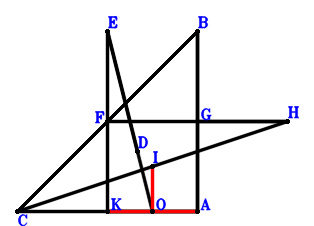
\(\because \) D is the centroid of △BCA \(\therefore \small\overrightarrow{AD}=\dfrac{\small\overrightarrow{AB}}{3} + \dfrac{\small\overrightarrow{AC}}{3}\).\(\because \) E, D, O are collinear and 2EO=3ED \(\therefore \small\overrightarrow{AE}=3 \small\overrightarrow{AD} - 2 \small\overrightarrow{AO}=\small\overrightarrow{AB} + \small\overrightarrow{AC} - 2 \small\overrightarrow{AO}\).\(\because \) F is the midpoint of CB \(\therefore \small\overrightarrow{AF}=\dfrac{\small\overrightarrow{AB}}{2} + \dfrac{\small\overrightarrow{AC}}{2}\).\(\because \) G is the midpoint of BA \(\therefore \small\overrightarrow{AG}=\dfrac{\small\overrightarrow{AB}}{2}\).\(\because \) G is the midpoint of FH \(\therefore \small\overrightarrow{AH}=\small\overrightarrow{AB} - \small\overrightarrow{AF}=\dfrac{\small\overrightarrow{AB}}{2} - \dfrac{\small\overrightarrow{AC}}{2}\).\(\because \) I is the midpoint of CH \(\therefore \small\overrightarrow{AI}=\dfrac{\small\overrightarrow{AC}}{2} + \dfrac{\small\overrightarrow{AH}}{2}=\dfrac{\small\overrightarrow{AB}}{4} + \dfrac{\small\overrightarrow{AC}}{4}\).\(\because \) KO=OA \(\therefore - \small\overrightarrow{OA}^{2} + \small\overrightarrow{OK}^{2}=- \small\overrightarrow{AO}^{2} + \left(\small\overrightarrow{AK} - \small\overrightarrow{AO}\right)^{2}=\small\overrightarrow{AK}^{2} - 2 \small\overrightarrow{AK} \cdot \small\overrightarrow{AO}=0\) . . . . . . \(①\)\(\because \) EK⊥KA \(\therefore \small\overrightarrow{EK} \cdot \small\overrightarrow{KA}=- \small\overrightarrow{AK} \cdot \left(- \small\overrightarrow{AE} + \small\overrightarrow{AK}\right)=- \small\overrightarrow{AK} \cdot \left(- \small\overrightarrow{AB} - \small\overrightarrow{AC} + \small\overrightarrow{AK} + 2 \small\overrightarrow{AO}\right)=\small\overrightarrow{AB} \cdot \small\overrightarrow{AK} + \small\overrightarrow{AC} \cdot \small\overrightarrow{AK} - \small\overrightarrow{AK}^{2} - 2 \small\overrightarrow{AK} \cdot \small\overrightarrow{AO}=0\) . . . . . . \(②\)In conclusion, \(\small\overrightarrow{KA} \cdot \small\overrightarrow{OI}=- \small\overrightarrow{AK} \cdot \left(\small\overrightarrow{AI} - \small\overrightarrow{AO}\right)=- \small\overrightarrow{AK} \cdot \left(\dfrac{\small\overrightarrow{AB}}{4} + \dfrac{\small\overrightarrow{AC}}{4} - \small\overrightarrow{AO}\right)=- \dfrac{\small\overrightarrow{AB} \cdot \small\overrightarrow{AK}}{4} - \dfrac{\small\overrightarrow{AC} \cdot \small\overrightarrow{AK}}{4} + \small\overrightarrow{AK} \cdot \small\overrightarrow{AO}=-1/4\cdot①-1/4\cdot②=0\), that is, KA⊥IO.
Exercise 17971： Let DCOB be a trapezoid with DB//CO and DB=2CO. DCEO is a trapezoid with DC//OE and DC=2OE. O is the midpoint of HG. F is the midpoint of BA and KG. KA⊥AE. KO=OA. Prove that HC⊥KA.
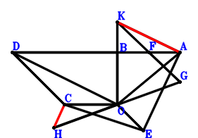
\(\because \) DB//CO and DB=2CO \(\therefore \small\overrightarrow{OD}=\small\overrightarrow{OB} + 2 \small\overrightarrow{OC}\).\(\because \) DC//OE and DC=2OE \(\therefore \small\overrightarrow{OE}=\dfrac{\small\overrightarrow{OC}}{2} - \dfrac{\small\overrightarrow{OD}}{2}=- \dfrac{\small\overrightarrow{OB}}{2} - \dfrac{\small\overrightarrow{OC}}{2}\).\(\because \) F is the midpoint of BA \(\therefore \small\overrightarrow{OF}=\dfrac{\small\overrightarrow{OA}}{2} + \dfrac{\small\overrightarrow{OB}}{2}\).\(\because \) F is the midpoint of KG \(\therefore \small\overrightarrow{OG}=2 \small\overrightarrow{OF} - \small\overrightarrow{OK}=\small\overrightarrow{OA} + \small\overrightarrow{OB} - \small\overrightarrow{OK}\).\(\because \) O is the midpoint of HG \(\therefore \small\overrightarrow{OH}=- \small\overrightarrow{OG}=- \small\overrightarrow{OA} - \small\overrightarrow{OB} + \small\overrightarrow{OK}\).\(\because \) KO=OA \(\therefore - \small\overrightarrow{OA}^{2} + \small\overrightarrow{OK}^{2}=0\) . . . . . . \(①\)\(\because \) KA⊥AE \(\therefore \small\overrightarrow{EA} \cdot \small\overrightarrow{KA}=\left(\small\overrightarrow{OA} - \small\overrightarrow{OE}\right) \cdot \left(\small\overrightarrow{OA} - \small\overrightarrow{OK}\right)=\left(\small\overrightarrow{OA} - \small\overrightarrow{OK}\right) \cdot \left(\small\overrightarrow{OA} + \dfrac{\small\overrightarrow{OB}}{2} + \dfrac{\small\overrightarrow{OC}}{2}\right)=\small\overrightarrow{OA}^{2} + \dfrac{\small\overrightarrow{OA} \cdot \small\overrightarrow{OB}}{2} + \dfrac{\small\overrightarrow{OA} \cdot \small\overrightarrow{OC}}{2} - \small\overrightarrow{OA} \cdot \small\overrightarrow{OK} - \dfrac{\small\overrightarrow{OB} \cdot \small\overrightarrow{OK}}{2} - \dfrac{\small\overrightarrow{OC} \cdot \small\overrightarrow{OK}}{2}=0\) . . . . . . \(②\)In conclusion, \(\small\overrightarrow{CH} \cdot \small\overrightarrow{KA}=\left(\small\overrightarrow{OA} - \small\overrightarrow{OK}\right) \cdot \left(- \small\overrightarrow{OC} + \small\overrightarrow{OH}\right)=\left(\small\overrightarrow{OA} - \small\overrightarrow{OK}\right) \cdot \left(- \small\overrightarrow{OA} - \small\overrightarrow{OB} - \small\overrightarrow{OC} + \small\overrightarrow{OK}\right)=- \small\overrightarrow{OA}^{2} - \small\overrightarrow{OA} \cdot \small\overrightarrow{OB} - \small\overrightarrow{OA} \cdot \small\overrightarrow{OC} + 2 \small\overrightarrow{OA} \cdot \small\overrightarrow{OK} + \small\overrightarrow{OB} \cdot \small\overrightarrow{OK} + \small\overrightarrow{OC} \cdot \small\overrightarrow{OK} - \small\overrightarrow{OK}^{2}=-①-2\cdot②=0\), that is, HC⊥KA.
Exercise 18211： Let EAOB be a parallelogram. EFCB is a trapezoid with CB//FE and CB=2FE. O, D are the orthocenter and circumcenter of △BAC. AK⊥KD. KO=AO. Prove that FO⊥KA.
Exercise 18226： Let FHGC be a parallelogram. CKEO is a trapezoid with KC//EO and KC=2EO. D, O, G are the midpoints of BA, FB, BC, respectively. KO=OA. Given that K, H, A are collinear and KA//ED, prove that \(ED·KA=HA·KA\).
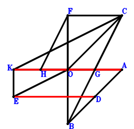
\(\because \) D is the midpoint of BA \(\therefore \small\overrightarrow{AD}=\dfrac{\small\overrightarrow{AB}}{2}\).\(\because \) KC//EO and KC=2EO \(\therefore \small\overrightarrow{AE}=- \dfrac{\small\overrightarrow{AC}}{2} + \dfrac{\small\overrightarrow{AK}}{2} + \small\overrightarrow{AO}\).\(\because \) O is the midpoint of FB \(\therefore \small\overrightarrow{AF}=- \small\overrightarrow{AB} + 2 \small\overrightarrow{AO}\).\(\because \) G is the midpoint of BC \(\therefore \small\overrightarrow{AG}=\dfrac{\small\overrightarrow{AB}}{2} + \dfrac{\small\overrightarrow{AC}}{2}\).\(\because \) FHGC is a parallelogram \(\therefore \small\overrightarrow{AH}=- \dfrac{\small\overrightarrow{AB}}{2} - \dfrac{\small\overrightarrow{AC}}{2} + 2 \small\overrightarrow{AO}\).\(\because \) KO=OA \( \therefore- \small\overrightarrow{OA}^{2} + \small\overrightarrow{OK}^{2}=- \small\overrightarrow{AO}^{2} + \left(\small\overrightarrow{AK} - \small\overrightarrow{AO}\right)^{2}=\small\overrightarrow{AK}^{2} - 2 \small\overrightarrow{AK} \cdot \small\overrightarrow{AO}=0.\)In conclusion, \(\small\overrightarrow{DE} \cdot \small\overrightarrow{KA} + \small\overrightarrow{HA} \cdot \small\overrightarrow{KA}=\small\overrightarrow{AH} \cdot \small\overrightarrow{AK} - \small\overrightarrow{AK} \cdot \left(- \small\overrightarrow{AD} + \small\overrightarrow{AE}\right)=\small\overrightarrow{AK} \cdot \left(- \dfrac{\small\overrightarrow{AB}}{2} - \dfrac{\small\overrightarrow{AC}}{2} + 2 \small\overrightarrow{AO}\right) - \small\overrightarrow{AK} \cdot \left(- \dfrac{\small\overrightarrow{AB}}{2} - \dfrac{\small\overrightarrow{AC}}{2} + \dfrac{\small\overrightarrow{AK}}{2} + \small\overrightarrow{AO}\right)=- \dfrac{\small\overrightarrow{AK}^{2}}{2} + \small\overrightarrow{AK} \cdot \small\overrightarrow{AO}=0\)\(\because\) K, H, A are collinear and KA//ED \(\therefore\) \(ED·KA=HA·KA\).
Exercise 19149： Let BOED be a parallelogram. BCOD is a trapezoid with CB//OD and CB=2OD. BFGO is a trapezoid with BO//FG and BO=2FG. F, G are the midpoints of KO, CH, respectively. KA⊥AE. KO=AO. Prove that KA⊥AH.
Exercise 22687： Let DBOC be a parallelogram. HKGO is a trapezoid with KH//GO and KH=2GO. DOEC is a trapezoid with CE//DO and CE=2DO. F, G are the midpoints of BE, BA, respectively. KA⊥AF. KO=AO. Prove that CH⊥KA.
Exercise 22889： Let OCBD be a trapezoid with CB//OD and CB=4OD. O is the midpoint of CG. E is the midpoint of BA and KF. KA⊥DE. KO=OA. Prove that GF⊥KA.
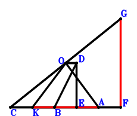
\(\because \) CB//OD and CB=4OD \(\therefore \small\overrightarrow{AD}=\dfrac{\small\overrightarrow{AB}}{4} - \dfrac{\small\overrightarrow{AC}}{4} + \small\overrightarrow{AO}\).\(\because \) E is the midpoint of BA \(\therefore \small\overrightarrow{AE}=\dfrac{\small\overrightarrow{AB}}{2}\).\(\because \) E is the midpoint of KF \(\therefore \small\overrightarrow{AF}=2 \small\overrightarrow{AE} - \small\overrightarrow{AK}=\small\overrightarrow{AB} - \small\overrightarrow{AK}\).\(\because \) O is the midpoint of CG \(\therefore \small\overrightarrow{AG}=- \small\overrightarrow{AC} + 2 \small\overrightarrow{AO}\).\(\because \) KO=OA \(\therefore - \small\overrightarrow{OA}^{2} + \small\overrightarrow{OK}^{2}=- \small\overrightarrow{AO}^{2} + \left(\small\overrightarrow{AK} - \small\overrightarrow{AO}\right)^{2}=\small\overrightarrow{AK}^{2} - 2 \small\overrightarrow{AK} \cdot \small\overrightarrow{AO}=0\) . . . . . . \(①\)\(\because \) KA⊥DE \(\therefore \small\overrightarrow{DE} \cdot \small\overrightarrow{KA}=- \small\overrightarrow{AK} \cdot \left(- \small\overrightarrow{AD} + \small\overrightarrow{AE}\right)=- \small\overrightarrow{AK} \cdot \left(\dfrac{\small\overrightarrow{AB}}{4} + \dfrac{\small\overrightarrow{AC}}{4} - \small\overrightarrow{AO}\right)=- \dfrac{\small\overrightarrow{AB} \cdot \small\overrightarrow{AK}}{4} - \dfrac{\small\overrightarrow{AC} \cdot \small\overrightarrow{AK}}{4} + \small\overrightarrow{AK} \cdot \small\overrightarrow{AO}=0\) . . . . . . \(②\)In conclusion, \(\small\overrightarrow{FG} \cdot \small\overrightarrow{KA}=- \small\overrightarrow{AK} \cdot \left(- \small\overrightarrow{AF} + \small\overrightarrow{AG}\right)=- \small\overrightarrow{AK} \cdot \left(- \small\overrightarrow{AB} - \small\overrightarrow{AC} + \small\overrightarrow{AK} + 2 \small\overrightarrow{AO}\right)=\small\overrightarrow{AB} \cdot \small\overrightarrow{AK} + \small\overrightarrow{AC} \cdot \small\overrightarrow{AK} - \small\overrightarrow{AK}^{2} - 2 \small\overrightarrow{AK} \cdot \small\overrightarrow{AO}=-①-4\cdot②=0\), that is, GF⊥KA.
Exercise 22950： Let GBOH and GFAO be parallelograms. BEDO is a trapezoid with EB//DO and EB=2DO. F, D are the midpoints of CB, CA, respectively. EK⊥KA. KO=OA. Prove that KA⊥CH.
Exercise 23610： Let DBOC and CKBG be parallelograms. DOEC is a trapezoid with CE//DO and CE=2DO. O, F are the midpoints of AH, BE, respectively. KA⊥AF. KO=AO. Prove that GH⊥KA.
Exercise 24133： Let BGFO be a trapezoid with BO//GF and BO=2GF. BCDE is a trapezoid with CB//DE and CB=2DE. F, O, G are the midpoints of AC, BD, HO, respectively. KA⊥AE. KO=AO. Prove that HK⊥KA.
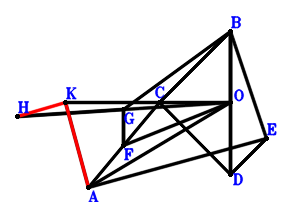
\(\because \) O is the midpoint of BD \(\therefore \small\overrightarrow{OD}=- \small\overrightarrow{OB}\).\(\because \) CB//DE and CB=2DE \(\therefore \small\overrightarrow{OE}=- \dfrac{\small\overrightarrow{OB}}{2} - \dfrac{\small\overrightarrow{OC}}{2}\).\(\because \) F is the midpoint of AC \(\therefore \small\overrightarrow{OF}=\dfrac{\small\overrightarrow{OA}}{2} + \dfrac{\small\overrightarrow{OC}}{2}\).\(\because \) BO//GF and BO=2GF \(\therefore \small\overrightarrow{OG}=\dfrac{\small\overrightarrow{OA}}{2} + \dfrac{\small\overrightarrow{OB}}{2} + \dfrac{\small\overrightarrow{OC}}{2}\).\(\because \) G is the midpoint of HO \(\therefore \small\overrightarrow{OH}=2 \small\overrightarrow{OG}=\small\overrightarrow{OA} + \small\overrightarrow{OB} + \small\overrightarrow{OC}\).\(\because \) KO=AO \(\therefore - \small\overrightarrow{OA}^{2} + \small\overrightarrow{OK}^{2}=0\) . . . . . . \(①\)\(\because \) KA⊥AE \(\therefore \small\overrightarrow{EA} \cdot \small\overrightarrow{KA}=\left(\small\overrightarrow{OA} - \small\overrightarrow{OE}\right) \cdot \left(\small\overrightarrow{OA} - \small\overrightarrow{OK}\right)=\left(\small\overrightarrow{OA} - \small\overrightarrow{OK}\right) \cdot \left(\small\overrightarrow{OA} + \dfrac{\small\overrightarrow{OB}}{2} + \dfrac{\small\overrightarrow{OC}}{2}\right)=\small\overrightarrow{OA}^{2} + \dfrac{\small\overrightarrow{OA} \cdot \small\overrightarrow{OB}}{2} + \dfrac{\small\overrightarrow{OA} \cdot \small\overrightarrow{OC}}{2} - \small\overrightarrow{OA} \cdot \small\overrightarrow{OK} - \dfrac{\small\overrightarrow{OB} \cdot \small\overrightarrow{OK}}{2} - \dfrac{\small\overrightarrow{OC} \cdot \small\overrightarrow{OK}}{2}=0\) . . . . . . \(②\)In conclusion, \(\small\overrightarrow{HK} \cdot \small\overrightarrow{KA}=\left(\small\overrightarrow{OA} - \small\overrightarrow{OK}\right) \cdot \left(- \small\overrightarrow{OH} + \small\overrightarrow{OK}\right)=\left(\small\overrightarrow{OA} - \small\overrightarrow{OK}\right) \cdot \left(- \small\overrightarrow{OA} - \small\overrightarrow{OB} - \small\overrightarrow{OC} + \small\overrightarrow{OK}\right)=- \small\overrightarrow{OA}^{2} - \small\overrightarrow{OA} \cdot \small\overrightarrow{OB} - \small\overrightarrow{OA} \cdot \small\overrightarrow{OC} + 2 \small\overrightarrow{OA} \cdot \small\overrightarrow{OK} + \small\overrightarrow{OB} \cdot \small\overrightarrow{OK} + \small\overrightarrow{OC} \cdot \small\overrightarrow{OK} - \small\overrightarrow{OK}^{2}=-①-2\cdot②=0\), that is, HK⊥KA.
Exercise 25834： Let BGOF be a trapezoid with BF//GO and BF=2GO. KCOD is a trapezoid with CK//OD and CK=2OD. COAF is a trapezoid with CF//OA and CF=2OA. D is the midpoint of BE. KA⊥AE. OK=OA. Prove that KA⊥GB.
Exercise 25969： Let BEDO be a trapezoid with BO//ED and BO=2ED. I, H, A are collinear and IA=3IH. G, H, O are collinear and GH=2HO. E, G, I, D are the midpoints of FO, CB, CJ, CA, respectively. FK⊥KA. KO=OA. Prove that KA⊥BJ.
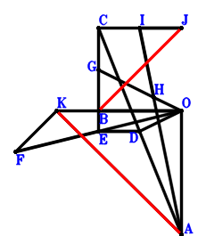
\(\because \) D is the midpoint of CA \(\therefore \small\overrightarrow{OD}=\dfrac{\small\overrightarrow{OA}}{2} + \dfrac{\small\overrightarrow{OC}}{2}\).\(\because \) BO//ED and BO=2ED \(\therefore \small\overrightarrow{OE}=\dfrac{\small\overrightarrow{OA}}{2} + \dfrac{\small\overrightarrow{OB}}{2} + \dfrac{\small\overrightarrow{OC}}{2}\).\(\because \) E is the midpoint of FO \(\therefore \small\overrightarrow{OF}=2 \small\overrightarrow{OE}=\small\overrightarrow{OA} + \small\overrightarrow{OB} + \small\overrightarrow{OC}\).\(\because \) G is the midpoint of CB \(\therefore \small\overrightarrow{OG}=\dfrac{\small\overrightarrow{OB}}{2} + \dfrac{\small\overrightarrow{OC}}{2}\).\(\because \) G, H, O are collinear and GH=2HO \(\therefore \small\overrightarrow{OH}=\dfrac{\small\overrightarrow{OG}}{3}=\dfrac{\small\overrightarrow{OB}}{6} + \dfrac{\small\overrightarrow{OC}}{6}\).\(\because \) I, H, A are collinear and IA=3IH \(\therefore \small\overrightarrow{OI}=- \dfrac{\small\overrightarrow{OA}}{2} + \dfrac{3 \small\overrightarrow{OH}}{2}=- \dfrac{\small\overrightarrow{OA}}{2} + \dfrac{\small\overrightarrow{OB}}{4} + \dfrac{\small\overrightarrow{OC}}{4}\).\(\because \) I is the midpoint of CJ \(\therefore \small\overrightarrow{OJ}=- \small\overrightarrow{OC} + 2 \small\overrightarrow{OI}=- \small\overrightarrow{OA} + \dfrac{\small\overrightarrow{OB}}{2} - \dfrac{\small\overrightarrow{OC}}{2}\).\(\because \) KO=OA \(\therefore - \small\overrightarrow{OA}^{2} + \small\overrightarrow{OK}^{2}=0\) . . . . . . \(①\)\(\because \) FK⊥KA \(\therefore \small\overrightarrow{FK} \cdot \small\overrightarrow{KA}=\left(\small\overrightarrow{OA} - \small\overrightarrow{OK}\right) \cdot \left(- \small\overrightarrow{OF} + \small\overrightarrow{OK}\right)=\left(\small\overrightarrow{OA} - \small\overrightarrow{OK}\right) \cdot \left(- \small\overrightarrow{OA} - \small\overrightarrow{OB} - \small\overrightarrow{OC} + \small\overrightarrow{OK}\right)=- \small\overrightarrow{OA}^{2} - \small\overrightarrow{OA} \cdot \small\overrightarrow{OB} - \small\overrightarrow{OA} \cdot \small\overrightarrow{OC} + 2 \small\overrightarrow{OA} \cdot \small\overrightarrow{OK} + \small\overrightarrow{OB} \cdot \small\overrightarrow{OK} + \small\overrightarrow{OC} \cdot \small\overrightarrow{OK} - \small\overrightarrow{OK}^{2}=0\) . . . . . . \(②\)In conclusion, \(\small\overrightarrow{JB} \cdot \small\overrightarrow{KA}=\left(\small\overrightarrow{OA} - \small\overrightarrow{OK}\right) \cdot \left(\small\overrightarrow{OB} - \small\overrightarrow{OJ}\right)=\left(\small\overrightarrow{OA} - \small\overrightarrow{OK}\right) \cdot \left(\small\overrightarrow{OA} + \dfrac{\small\overrightarrow{OB}}{2} + \dfrac{\small\overrightarrow{OC}}{2}\right)=\small\overrightarrow{OA}^{2} + \dfrac{\small\overrightarrow{OA} \cdot \small\overrightarrow{OB}}{2} + \dfrac{\small\overrightarrow{OA} \cdot \small\overrightarrow{OC}}{2} - \small\overrightarrow{OA} \cdot \small\overrightarrow{OK} - \dfrac{\small\overrightarrow{OB} \cdot \small\overrightarrow{OK}}{2} - \dfrac{\small\overrightarrow{OC} \cdot \small\overrightarrow{OK}}{2}=-1/2\cdot①-1/2\cdot②=0\), that is, KA⊥BJ.
Exercise 26007： Let DCOB and HKAG be parallelograms. DOEB is a trapezoid with BE//DO and BE=2DO. O, F are the midpoints of BG, CE, respectively. KA⊥AF. KO=AO. Prove that CH⊥KA.
Exercise 26553： Let DBKC be a parallelogram. O, E are the orthocenter and circumcenter of △CBA. KO=AO. Prove that ED⊥KA.
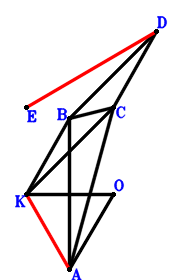
\(\because \) DBKC is a parallelogram \(\therefore \small\overrightarrow{OD}=\small\overrightarrow{OB} + \small\overrightarrow{OC} - \small\overrightarrow{OK}\).\(\because \) O, E are the orthocenter and circumcenter of △CBA \(\therefore \small\overrightarrow{OE}=\small\overrightarrow{OA} + \small\overrightarrow{OB} + \small\overrightarrow{OC}\).\(\because \) KO=AO \( \therefore- \small\overrightarrow{OA}^{2} + \small\overrightarrow{OK}^{2}=0.\)In conclusion, \(\small\overrightarrow{DE} \cdot \small\overrightarrow{KA}=\left(\small\overrightarrow{OA} - \small\overrightarrow{OK}\right) \cdot \left(- \small\overrightarrow{OD} + \small\overrightarrow{OE}\right)=\left(\small\overrightarrow{OA} - \small\overrightarrow{OK}\right) \cdot \left(\small\overrightarrow{OA} + \small\overrightarrow{OK}\right)=\small\overrightarrow{OA}^{2} - \small\overrightarrow{OK}^{2}=0\), that is, ED⊥KA.
Exercise 27357： Let DEFB be a trapezoid with DB//EF and DB=2EF. E, I, D are the midpoints of CA, CH, CB, respectively. G is the midpoint of KH and BA. KA⊥FO. KO=OA. Prove that KA⊥IO.
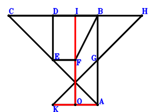
\(\because \) D is the midpoint of CB \(\therefore \small\overrightarrow{AD}=\dfrac{\small\overrightarrow{AB}}{2} + \dfrac{\small\overrightarrow{AC}}{2}\).\(\because \) E is the midpoint of CA \(\therefore \small\overrightarrow{AE}=\dfrac{\small\overrightarrow{AC}}{2}\).\(\because \) DB//EF and DB=2EF \(\therefore \small\overrightarrow{AF}=\dfrac{\small\overrightarrow{AB}}{2} + \dfrac{\small\overrightarrow{AC}}{2} - \dfrac{\small\overrightarrow{AD}}{2}=\dfrac{\small\overrightarrow{AB}}{4} + \dfrac{\small\overrightarrow{AC}}{4}\).\(\because \) G is the midpoint of BA \(\therefore \small\overrightarrow{AG}=\dfrac{\small\overrightarrow{AB}}{2}\).\(\because \) G is the midpoint of KH \(\therefore \small\overrightarrow{AH}=2 \small\overrightarrow{AG} - \small\overrightarrow{AK}=\small\overrightarrow{AB} - \small\overrightarrow{AK}\).\(\because \) I is the midpoint of CH \(\therefore \small\overrightarrow{AI}=\dfrac{\small\overrightarrow{AC}}{2} + \dfrac{\small\overrightarrow{AH}}{2}=\dfrac{\small\overrightarrow{AB}}{2} + \dfrac{\small\overrightarrow{AC}}{2} - \dfrac{\small\overrightarrow{AK}}{2}\).\(\because \) KO=OA \(\therefore - \small\overrightarrow{OA}^{2} + \small\overrightarrow{OK}^{2}=- \small\overrightarrow{AO}^{2} + \left(\small\overrightarrow{AK} - \small\overrightarrow{AO}\right)^{2}=\small\overrightarrow{AK}^{2} - 2 \small\overrightarrow{AK} \cdot \small\overrightarrow{AO}=0\) . . . . . . \(①\)\(\because \) KA⊥FO \(\therefore \small\overrightarrow{KA} \cdot \small\overrightarrow{OF}=- \small\overrightarrow{AK} \cdot \left(\small\overrightarrow{AF} - \small\overrightarrow{AO}\right)=- \small\overrightarrow{AK} \cdot \left(\dfrac{\small\overrightarrow{AB}}{4} + \dfrac{\small\overrightarrow{AC}}{4} - \small\overrightarrow{AO}\right)=- \dfrac{\small\overrightarrow{AB} \cdot \small\overrightarrow{AK}}{4} - \dfrac{\small\overrightarrow{AC} \cdot \small\overrightarrow{AK}}{4} + \small\overrightarrow{AK} \cdot \small\overrightarrow{AO}=0\) . . . . . . \(②\)In conclusion, \(\small\overrightarrow{IO} \cdot \small\overrightarrow{KA}=- \small\overrightarrow{AK} \cdot \left(- \small\overrightarrow{AI} + \small\overrightarrow{AO}\right)=- \small\overrightarrow{AK} \cdot \left(- \dfrac{\small\overrightarrow{AB}}{2} - \dfrac{\small\overrightarrow{AC}}{2} + \dfrac{\small\overrightarrow{AK}}{2} + \small\overrightarrow{AO}\right)=\dfrac{\small\overrightarrow{AB} \cdot \small\overrightarrow{AK}}{2} + \dfrac{\small\overrightarrow{AC} \cdot \small\overrightarrow{AK}}{2} - \dfrac{\small\overrightarrow{AK}^{2}}{2} - \small\overrightarrow{AK} \cdot \small\overrightarrow{AO}=-1/2\cdot①-2\cdot②=0\), that is, KA⊥IO.
Exercise 27669： Let FGKC be a parallelogram. DBCO is a trapezoid with BC//DO and BC=4DO. D, O are the midpoints of BE, FA, respectively. KA⊥AE. KO=OA. Prove that GB⊥KA.
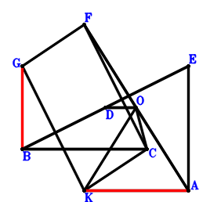
\(\because \) BC//DO and BC=4DO \(\therefore \small\overrightarrow{AD}=\dfrac{\small\overrightarrow{AB}}{4} - \dfrac{\small\overrightarrow{AC}}{4} + \small\overrightarrow{AO}\).\(\because \) D is the midpoint of BE \(\therefore \small\overrightarrow{AE}=- \small\overrightarrow{AB} + 2 \small\overrightarrow{AD}=- \dfrac{\small\overrightarrow{AB}}{2} - \dfrac{\small\overrightarrow{AC}}{2} + 2 \small\overrightarrow{AO}\).\(\because \) O is the midpoint of FA \(\therefore \small\overrightarrow{AF}=2 \small\overrightarrow{AO}\).\(\because \) FGKC is a parallelogram \(\therefore \small\overrightarrow{AG}=- \small\overrightarrow{AC} + \small\overrightarrow{AK} + 2 \small\overrightarrow{AO}\).\(\because \) KO=OA \(\therefore - \small\overrightarrow{OA}^{2} + \small\overrightarrow{OK}^{2}=- \small\overrightarrow{AO}^{2} + \left(\small\overrightarrow{AK} - \small\overrightarrow{AO}\right)^{2}=\small\overrightarrow{AK}^{2} - 2 \small\overrightarrow{AK} \cdot \small\overrightarrow{AO}=0\) . . . . . . \(①\)\(\because \) KA⊥AE \(\therefore \small\overrightarrow{AE} \cdot \small\overrightarrow{AK}=\small\overrightarrow{AK} \cdot \left(- \dfrac{\small\overrightarrow{AB}}{2} - \dfrac{\small\overrightarrow{AC}}{2} + 2 \small\overrightarrow{AO}\right)=- \dfrac{\small\overrightarrow{AB} \cdot \small\overrightarrow{AK}}{2} - \dfrac{\small\overrightarrow{AC} \cdot \small\overrightarrow{AK}}{2} + 2 \small\overrightarrow{AK} \cdot \small\overrightarrow{AO}=0\) . . . . . . \(②\)In conclusion, \(\small\overrightarrow{BG} \cdot \small\overrightarrow{KA}=- \small\overrightarrow{AK} \cdot \left(- \small\overrightarrow{AB} + \small\overrightarrow{AG}\right)=- \small\overrightarrow{AK} \cdot \left(- \small\overrightarrow{AB} - \small\overrightarrow{AC} + \small\overrightarrow{AK} + 2 \small\overrightarrow{AO}\right)=\small\overrightarrow{AB} \cdot \small\overrightarrow{AK} + \small\overrightarrow{AC} \cdot \small\overrightarrow{AK} - \small\overrightarrow{AK}^{2} - 2 \small\overrightarrow{AK} \cdot \small\overrightarrow{AO}=-①-2\cdot②=0\), that is, GB⊥KA.
Exercise 28080： Let BKAF be a parallelogram. BCDE is a trapezoid with CB//DE and CB=2DE. O is the midpoint of DB and GF. KA⊥AE. KO=OA. Prove that CG⊥KA.
Exercise 28620： Let KCGA be a parallelogram. CBOD is a trapezoid with CD//BO and CD=2BO. COED is a trapezoid with DE//CO and DE=2CO. F, H are the midpoints of BE, BG, respectively. KA⊥AF. KO=OA. Prove that KA⊥OH.
Exercise 28673： Let CDEO be a parallelogram. CDOB is a trapezoid with CB//DO and CB=2DO. BOGF is a trapezoid with BO//FG and BO=2FG. G, F are the midpoints of AH, OK, respectively. KA⊥AE. OK=OA. Prove that CH⊥AK.
Exercise 29408： Let GCHB be a parallelogram. E, O are the midpoints of CB, DA, respectively. F is the midpoint of AG and OK. AK⊥DE. OK=OA. Prove that AK⊥HO.
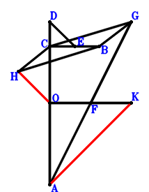
\(\because \) O is the midpoint of DA \(\therefore \small\overrightarrow{OD}=- \small\overrightarrow{OA}\).\(\because \) E is the midpoint of CB \(\therefore \small\overrightarrow{OE}=\dfrac{\small\overrightarrow{OB}}{2} + \dfrac{\small\overrightarrow{OC}}{2}\).\(\because \) F is the midpoint of OK \(\therefore \small\overrightarrow{OF}=\dfrac{\small\overrightarrow{OK}}{2}\).\(\because \) F is the midpoint of AG \(\therefore \small\overrightarrow{OG}=- \small\overrightarrow{OA} + 2 \small\overrightarrow{OF}=- \small\overrightarrow{OA} + \small\overrightarrow{OK}\).\(\because \) GCHB is a parallelogram \(\therefore \small\overrightarrow{OH}=\small\overrightarrow{OB} + \small\overrightarrow{OC} - \small\overrightarrow{OG}=\small\overrightarrow{OA} + \small\overrightarrow{OB} + \small\overrightarrow{OC} - \small\overrightarrow{OK}\).\(\because \) OK=OA \(\therefore - \small\overrightarrow{OA}^{2} + \small\overrightarrow{OK}^{2}=0\) . . . . . . \(①\)\(\because \) AK⊥DE \(\therefore \small\overrightarrow{DE} \cdot \small\overrightarrow{KA}=\left(\small\overrightarrow{OA} - \small\overrightarrow{OK}\right) \cdot \left(- \small\overrightarrow{OD} + \small\overrightarrow{OE}\right)=\left(\small\overrightarrow{OA} - \small\overrightarrow{OK}\right) \cdot \left(\small\overrightarrow{OA} + \dfrac{\small\overrightarrow{OB}}{2} + \dfrac{\small\overrightarrow{OC}}{2}\right)=\small\overrightarrow{OA}^{2} + \dfrac{\small\overrightarrow{OA} \cdot \small\overrightarrow{OB}}{2} + \dfrac{\small\overrightarrow{OA} \cdot \small\overrightarrow{OC}}{2} - \small\overrightarrow{OA} \cdot \small\overrightarrow{OK} - \dfrac{\small\overrightarrow{OB} \cdot \small\overrightarrow{OK}}{2} - \dfrac{\small\overrightarrow{OC} \cdot \small\overrightarrow{OK}}{2}=0\) . . . . . . \(②\)In conclusion, \(\small\overrightarrow{HO} \cdot \small\overrightarrow{KA}=- \small\overrightarrow{OH} \cdot \left(\small\overrightarrow{OA} - \small\overrightarrow{OK}\right)=- \left(\small\overrightarrow{OA} - \small\overrightarrow{OK}\right) \cdot \left(\small\overrightarrow{OA} + \small\overrightarrow{OB} + \small\overrightarrow{OC} - \small\overrightarrow{OK}\right)=- \small\overrightarrow{OA}^{2} - \small\overrightarrow{OA} \cdot \small\overrightarrow{OB} - \small\overrightarrow{OA} \cdot \small\overrightarrow{OC} + 2 \small\overrightarrow{OA} \cdot \small\overrightarrow{OK} + \small\overrightarrow{OB} \cdot \small\overrightarrow{OK} + \small\overrightarrow{OC} \cdot \small\overrightarrow{OK} - \small\overrightarrow{OK}^{2}=-①-2\cdot②=0\), that is, AK⊥HO.
Exercise 29434： Let KHOA be a trapezoid with KA//HO and KA=2HO. EBOF is a trapezoid with BO//EF and BO=2EF. F, D, E are the midpoints of CG, BC, DO, respectively. KA⊥AG. KO=OA. Prove that KA⊥HD.
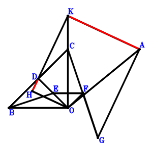
\(\because \) D is the midpoint of BC \(\therefore \small\overrightarrow{OD}=\dfrac{\small\overrightarrow{OB}}{2} + \dfrac{\small\overrightarrow{OC}}{2}\).\(\because \) E is the midpoint of DO \(\therefore \small\overrightarrow{OE}=\dfrac{\small\overrightarrow{OD}}{2}=\dfrac{\small\overrightarrow{OB}}{4} + \dfrac{\small\overrightarrow{OC}}{4}\).\(\because \) BO//EF and BO=2EF \(\therefore \small\overrightarrow{OF}=- \dfrac{\small\overrightarrow{OB}}{4} + \dfrac{\small\overrightarrow{OC}}{4}\).\(\because \) F is the midpoint of CG \(\therefore \small\overrightarrow{OG}=- \small\overrightarrow{OC} + 2 \small\overrightarrow{OF}=- \dfrac{\small\overrightarrow{OB}}{2} - \dfrac{\small\overrightarrow{OC}}{2}\).\(\because \) D is the midpoint of BC \(\therefore \small\overrightarrow{OH}=- \dfrac{\small\overrightarrow{OA}}{2} + \dfrac{\small\overrightarrow{OK}}{2}\).\(\because \) KA//HO and KA=2HO \(\therefore - \small\overrightarrow{OA}^{2} + \small\overrightarrow{OK}^{2}=0\) . . . . . . \(①\)\(\because \) KO=OA \(\therefore \small\overrightarrow{GA} \cdot \small\overrightarrow{KA}=\left(\small\overrightarrow{OA} - \small\overrightarrow{OG}\right) \cdot \left(\small\overrightarrow{OA} - \small\overrightarrow{OK}\right)=\left(\small\overrightarrow{OA} - \small\overrightarrow{OK}\right) \cdot \left(\small\overrightarrow{OA} + \dfrac{\small\overrightarrow{OB}}{2} + \dfrac{\small\overrightarrow{OC}}{2}\right)=\small\overrightarrow{OA}^{2} + \dfrac{\small\overrightarrow{OA} \cdot \small\overrightarrow{OB}}{2} + \dfrac{\small\overrightarrow{OA} \cdot \small\overrightarrow{OC}}{2} - \small\overrightarrow{OA} \cdot \small\overrightarrow{OK} - \dfrac{\small\overrightarrow{OB} \cdot \small\overrightarrow{OK}}{2} - \dfrac{\small\overrightarrow{OC} \cdot \small\overrightarrow{OK}}{2}=0\) . . . . . . \(②\)In conclusion, \(\small\overrightarrow{DH} \cdot \small\overrightarrow{KA}=\left(\small\overrightarrow{OA} - \small\overrightarrow{OK}\right) \cdot \left(- \small\overrightarrow{OD} + \small\overrightarrow{OH}\right)=\left(\small\overrightarrow{OA} - \small\overrightarrow{OK}\right) \cdot \left(- \dfrac{\small\overrightarrow{OA}}{2} - \dfrac{\small\overrightarrow{OB}}{2} - \dfrac{\small\overrightarrow{OC}}{2} + \dfrac{\small\overrightarrow{OK}}{2}\right)=- \dfrac{\small\overrightarrow{OA}^{2}}{2} - \dfrac{\small\overrightarrow{OA} \cdot \small\overrightarrow{OB}}{2} - \dfrac{\small\overrightarrow{OA} \cdot \small\overrightarrow{OC}}{2} + \small\overrightarrow{OA} \cdot \small\overrightarrow{OK} + \dfrac{\small\overrightarrow{OB} \cdot \small\overrightarrow{OK}}{2} + \dfrac{\small\overrightarrow{OC} \cdot \small\overrightarrow{OK}}{2} - \dfrac{\small\overrightarrow{OK}^{2}}{2}=-1/2\cdot①-②=0\), that is, KA⊥HD.
Exercise 29866： Let DBOC be a trapezoid with DC//BO and DC=2BO. KFOA is a trapezoid with KA//FO and KA=2FO. DBEO is a trapezoid with DB//OE and DB=2OE. F is the midpoint of BG. KA⊥AE. KO=OA. Prove that GC⊥KA.